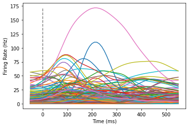
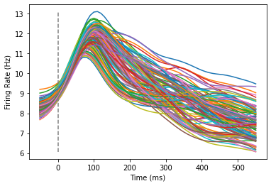
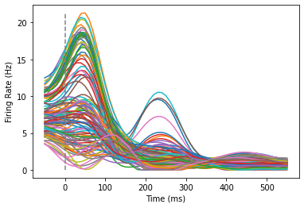

<!DOCTYPE html>


<html lang="en" >

  <head>
    <meta charset="utf-8" />
    <meta name="viewport" content="width=device-width, initial-scale=1.0" /><meta name="generator" content="Docutils 0.18.1: http://docutils.sourceforge.net/" />

    <title>How to Code a Paper &#8212; Teaching &amp; Learning with NWB Datasets</title>
  
  
  
  <script data-cfasync="false">
    document.documentElement.dataset.mode = localStorage.getItem("mode") || "";
    document.documentElement.dataset.theme = localStorage.getItem("theme") || "light";
  </script>
  
  <!-- Loaded before other Sphinx assets -->
  <link href="../_static/styles/theme.css?digest=e353d410970836974a52" rel="stylesheet" />
<link href="../_static/styles/bootstrap.css?digest=e353d410970836974a52" rel="stylesheet" />
<link href="../_static/styles/pydata-sphinx-theme.css?digest=e353d410970836974a52" rel="stylesheet" />

  
  <link href="../_static/vendor/fontawesome/6.1.2/css/all.min.css?digest=e353d410970836974a52" rel="stylesheet" />
  <link rel="preload" as="font" type="font/woff2" crossorigin href="../_static/vendor/fontawesome/6.1.2/webfonts/fa-solid-900.woff2" />
<link rel="preload" as="font" type="font/woff2" crossorigin href="../_static/vendor/fontawesome/6.1.2/webfonts/fa-brands-400.woff2" />
<link rel="preload" as="font" type="font/woff2" crossorigin href="../_static/vendor/fontawesome/6.1.2/webfonts/fa-regular-400.woff2" />

    <link rel="stylesheet" type="text/css" href="../_static/pygments.css" />
    <link rel="stylesheet" href="../_static/styles/sphinx-book-theme.css?digest=14f4ca6b54d191a8c7657f6c759bf11a5fb86285" type="text/css" />
    <link rel="stylesheet" type="text/css" href="../_static/togglebutton.css" />
    <link rel="stylesheet" type="text/css" href="../_static/copybutton.css" />
    <link rel="stylesheet" type="text/css" href="../_static/mystnb.4510f1fc1dee50b3e5859aac5469c37c29e427902b24a333a5f9fcb2f0b3ac41.css" />
    <link rel="stylesheet" type="text/css" href="../_static/sphinx-thebe.css" />
    <link rel="stylesheet" type="text/css" href="../_static/design-style.4045f2051d55cab465a707391d5b2007.min.css" />
  
  <!-- Pre-loaded scripts that we'll load fully later -->
  <link rel="preload" as="script" href="../_static/scripts/bootstrap.js?digest=e353d410970836974a52" />
<link rel="preload" as="script" href="../_static/scripts/pydata-sphinx-theme.js?digest=e353d410970836974a52" />

    <script data-url_root="../" id="documentation_options" src="../_static/documentation_options.js"></script>
    <script src="../_static/jquery.js"></script>
    <script src="../_static/underscore.js"></script>
    <script src="../_static/_sphinx_javascript_frameworks_compat.js"></script>
    <script src="../_static/doctools.js"></script>
    <script src="../_static/clipboard.min.js"></script>
    <script src="../_static/copybutton.js"></script>
    <script src="../_static/scripts/sphinx-book-theme.js?digest=5a5c038af52cf7bc1a1ec88eea08e6366ee68824"></script>
    <script>let toggleHintShow = 'Click to show';</script>
    <script>let toggleHintHide = 'Click to hide';</script>
    <script>let toggleOpenOnPrint = 'true';</script>
    <script src="../_static/togglebutton.js"></script>
    <script>var togglebuttonSelector = '.toggle, .admonition.dropdown';</script>
    <script src="../_static/design-tabs.js"></script>
    <script>const THEBE_JS_URL = "https://unpkg.com/thebe@0.8.2/lib/index.js"
const thebe_selector = ".thebe,.cell"
const thebe_selector_input = "pre"
const thebe_selector_output = ".output, .cell_output"
</script>
    <script async="async" src="../_static/sphinx-thebe.js"></script>
    <script>DOCUMENTATION_OPTIONS.pagename = 'Lesson_5/02-RotationalDynamics';</script>
    <link rel="index" title="Index" href="../genindex.html" />
    <link rel="search" title="Search" href="../search.html" />
    <link rel="prev" title="How does the brain encode space?" href="01-PlaceFields.html" />
  <meta name="viewport" content="width=device-width, initial-scale=1"/>
  <meta name="docsearch:language" content="en"/>
  </head>
  
  
  <body data-bs-spy="scroll" data-bs-target=".bd-toc-nav" data-offset="180" data-bs-root-margin="0px 0px -60%" data-default-mode="">

  
  
  <a class="skip-link" href="#main-content">Skip to main content</a>
  
  <input type="checkbox"
          class="sidebar-toggle"
          name="__primary"
          id="__primary"/>
  <label class="overlay overlay-primary" for="__primary"></label>
  
  <input type="checkbox"
          class="sidebar-toggle"
          name="__secondary"
          id="__secondary"/>
  <label class="overlay overlay-secondary" for="__secondary"></label>
  
  <div class="search-button__wrapper">
    <div class="search-button__overlay"></div>
    <div class="search-button__search-container">
<form class="bd-search d-flex align-items-center"
      action="../search.html"
      method="get">
  <i class="fa-solid fa-magnifying-glass"></i>
  <input type="search"
         class="form-control"
         name="q"
         id="search-input"
         placeholder="Search this book..."
         aria-label="Search this book..."
         autocomplete="off"
         autocorrect="off"
         autocapitalize="off"
         spellcheck="false"/>
  <span class="search-button__kbd-shortcut"><kbd class="kbd-shortcut__modifier">Ctrl</kbd>+<kbd>K</kbd></span>
</form></div>
  </div>
  
    <nav class="bd-header navbar navbar-expand-lg bd-navbar">
    </nav>
  
  <div class="bd-container">
    <div class="bd-container__inner bd-page-width">
      
      <div class="bd-sidebar-primary bd-sidebar">
        

  
  <div class="sidebar-header-items sidebar-primary__section">
    
    
    
    
  </div>
  
    <div class="sidebar-primary-items__start sidebar-primary__section">
        <div class="sidebar-primary-item">
  

<a class="navbar-brand logo" href="../landing_page.html">
  
  
  
  
    
    
      
    
    
    
    <script>document.write(``);</script>
  
  
</a></div>
        <div class="sidebar-primary-item"><nav class="bd-links" id="bd-docs-nav" aria-label="Main">
    <div class="bd-toc-item navbar-nav active">
        
        <ul class="nav bd-sidenav bd-sidenav__home-link">
            <li class="toctree-l1">
                <a class="reference internal" href="../landing_page.html">
                    Teaching and Learning with NWB Datasets
                </a>
            </li>
        </ul>
        <p aria-level="2" class="caption" role="heading"><span class="caption-text">INTRODUCTION</span></p>
<ul class="nav bd-sidenav">
<li class="toctree-l1 has-children"><a class="reference internal" href="../Introduction/Introduction.html">Introduction</a><input class="toctree-checkbox" id="toctree-checkbox-1" name="toctree-checkbox-1" type="checkbox"/><label class="toctree-toggle" for="toctree-checkbox-1"><i class="fa-solid fa-chevron-down"></i></label><ul>
<li class="toctree-l2"><a class="reference internal" href="../Introduction/Using_This_Book.html">How to Use this Book</a></li>
<li class="toctree-l2"><a class="reference internal" href="../Introduction/Setup.html">Set up Coding Environment</a></li>
<li class="toctree-l2"><a class="reference internal" href="../Introduction/For_Educators.html">For Educators</a></li>
</ul>
</li>
<li class="toctree-l1 has-children"><a class="reference internal" href="../Data_Science_In_Python/Introduction.html">Data Science in Python</a><input class="toctree-checkbox" id="toctree-checkbox-2" name="toctree-checkbox-2" type="checkbox"/><label class="toctree-toggle" for="toctree-checkbox-2"><i class="fa-solid fa-chevron-down"></i></label><ul>
<li class="toctree-l2"><a class="reference internal" href="../Data_Science_In_Python/NumPy.html">NumPy</a></li>
<li class="toctree-l2"><a class="reference internal" href="../Data_Science_In_Python/Pandas.html">Pandas</a></li>
<li class="toctree-l2"><a class="reference internal" href="../Data_Science_In_Python/Matplotlib.html">Visualizing with Matplotlib</a></li>
<li class="toctree-l2"><a class="reference internal" href="../Data_Science_In_Python/SciPy.html">SciPy</a></li>
</ul>
</li>
</ul>
<p aria-level="2" class="caption" role="heading"><span class="caption-text">PYNWB</span></p>
<ul class="nav bd-sidenav">
<li class="toctree-l1 has-children"><a class="reference internal" href="../Lesson_1/00-Introduction.html">Lesson #1: The Structure of NWB Datasets</a><input class="toctree-checkbox" id="toctree-checkbox-3" name="toctree-checkbox-3" type="checkbox"/><label class="toctree-toggle" for="toctree-checkbox-3"><i class="fa-solid fa-chevron-down"></i></label><ul>
<li class="toctree-l2"><a class="reference internal" href="../Lesson_1/01-Obtaining_Datasets_with_DANDI.html">Obtaining Datasets with DANDI</a></li>
<li class="toctree-l2"><a class="reference internal" href="../Lesson_1/02-Working_with_NWB_format_in_Python.html">Working with NWB in Python</a></li>
<li class="toctree-l2"><a class="reference internal" href="../Lesson_1/03-Interactive_NWB_Data_Exploration.html">Interactive NWB Data Exploration</a></li>
<li class="toctree-l2"><a class="reference internal" href="../Lesson_1/Lesson1_ProblemSet.html">Lesson #1 Problem Set</a></li>
</ul>
</li>
<li class="toctree-l1 has-children"><a class="reference internal" href="../Lesson_2/00-LargeEphysIntroduction.html">Lesson #2: Analyzing Extracellular Recordings</a><input class="toctree-checkbox" id="toctree-checkbox-4" name="toctree-checkbox-4" type="checkbox"/><label class="toctree-toggle" for="toctree-checkbox-4"><i class="fa-solid fa-chevron-down"></i></label><ul>
<li class="toctree-l2"><a class="reference internal" href="../Lesson_2/01-SpikeSorting.html">Spike Sorting</a></li>
<li class="toctree-l2"><a class="reference internal" href="../Lesson_2/02-Visualizing_Recordings.html">Visualizing Large Scale Recordings</a></li>
<li class="toctree-l2"><a class="reference internal" href="../Lesson_2/Lesson_2_ProblemSet.html">Lesson #2 Problem Set</a></li>
</ul>
</li>
</ul>
<p aria-level="2" class="caption" role="heading"><span class="caption-text">ALLENSDK</span></p>
<ul class="nav bd-sidenav">
<li class="toctree-l1 has-children"><a class="reference internal" href="../Lesson_3/00-SingleCellIntroduction.html">Lesson #3: Single-Cell Electrophysiology</a><input class="toctree-checkbox" id="toctree-checkbox-5" name="toctree-checkbox-5" type="checkbox"/><label class="toctree-toggle" for="toctree-checkbox-5"><i class="fa-solid fa-chevron-down"></i></label><ul>
<li class="toctree-l2"><a class="reference internal" href="../Lesson_3/01-Obtaining_Data_For_Single_Cells.html">Obtaining Data for Single Cells</a></li>
<li class="toctree-l2"><a class="reference internal" href="../Lesson_3/02-Analyzing_Computed_Features.html">Analyzing Computed Features</a></li>
<li class="toctree-l2"><a class="reference internal" href="../Lesson_3/Lesson_3_ProblemSet.html">Lesson 3 Problem Set</a></li>
</ul>
</li>
<li class="toctree-l1 has-children"><a class="reference internal" href="../Lesson_4/00-2pIntroduction.html">Lesson #4: Two Photon Imaging</a><input class="toctree-checkbox" id="toctree-checkbox-6" name="toctree-checkbox-6" type="checkbox"/><label class="toctree-toggle" for="toctree-checkbox-6"><i class="fa-solid fa-chevron-down"></i></label><ul>
<li class="toctree-l2"><a class="reference internal" href="../Lesson_4/01-Retrieving_Brain_Observatory_Data.html">Retrieving Calcium Imaging Data</a></li>
<li class="toctree-l2"><a class="reference internal" href="../Lesson_4/02-Analyzing_Two_Photon_Data.html">Analyzing Two Photon Data</a></li>
<li class="toctree-l2"><a class="reference internal" href="../Lesson_4/03-Correlations_in_Two_Photon_Data.html">Correlations in Two Photon Data</a></li>
</ul>
</li>
</ul>
<p aria-level="2" class="caption" role="heading"><span class="caption-text">GREATEST HITS</span></p>
<ul class="current nav bd-sidenav">
<li class="toctree-l1 current active has-children"><a class="reference internal" href="00-GreatestHits.html">Greatest Hits in Physiology</a><input checked="" class="toctree-checkbox" id="toctree-checkbox-7" name="toctree-checkbox-7" type="checkbox"/><label class="toctree-toggle" for="toctree-checkbox-7"><i class="fa-solid fa-chevron-down"></i></label><ul class="current">
<li class="toctree-l2"><a class="reference internal" href="01-PlaceFields.html">How does the brain encode space?</a></li>
<li class="toctree-l2 current active"><a class="current reference internal" href="#">How to <code class="docutils literal notranslate"><span class="pre">Code</span></code> a Paper</a></li>
</ul>
</li>
</ul>

    </div>
</nav></div>
    </div>
  
  
  <div class="sidebar-primary-items__end sidebar-primary__section">
  </div>
  
  <div id="rtd-footer-container"></div>


      </div>
      
      <main id="main-content" class="bd-main">
        
        

<div class="sbt-scroll-pixel-helper"></div>

          <div class="bd-content">
            <div class="bd-article-container">
              
              <div class="bd-header-article">
<div class="header-article-items header-article__inner">
  
    <div class="header-article-items__start">
      
        <div class="header-article-item"><label class="sidebar-toggle primary-toggle btn btn-sm" for="__primary" title="Toggle primary sidebar" data-bs-placement="bottom" data-bs-toggle="tooltip">
  <span class="fa-solid fa-bars"></span>
</label></div>
      
    </div>
  
  
    <div class="header-article-items__end">
      
        <div class="header-article-item">

<div class="article-header-buttons">


<div class="dropdown dropdown-launch-buttons">
  <button class="btn dropdown-toggle" type="button" data-bs-toggle="dropdown" aria-expanded="false" aria-label="Launch interactive content">
    <i class="fas fa-rocket"></i>
  </button>
  <ul class="dropdown-menu">
      
      
      
      <li><a href="https://colab.research.google.com/github/nwb4edu/nwb4edu.github.io/blob/master/Lesson_5/02-RotationalDynamics.ipynb" target="_blank"
   class="btn btn-sm dropdown-item"
   title="Launch onColab"
   data-bs-placement="left" data-bs-toggle="tooltip"
>
  

<span class="btn__icon-container">
  
    
  </span>
<span class="btn__text-container">Colab</span>
</a>
</li>
      
      
      
      
      <li>
<button onclick="initThebeSBT()"
  class="btn btn-sm btn-launch-thebe dropdown-item"
  title="Launch Thebe"
  data-bs-placement="left" data-bs-toggle="tooltip"
>
  

<span class="btn__icon-container">
  <i class="fas fa-play"></i>
  </span>
<span class="btn__text-container">Live Code</span>
</button>
</li>
      
  </ul>
</div>


<div class="dropdown dropdown-download-buttons">
  <button class="btn dropdown-toggle" type="button" data-bs-toggle="dropdown" aria-expanded="false" aria-label="Download this page">
    <i class="fas fa-download"></i>
  </button>
  <ul class="dropdown-menu">
      
      
      
      <li><a href="../_sources/Lesson_5/02-RotationalDynamics.ipynb" target="_blank"
   class="btn btn-sm btn-download-source-button dropdown-item"
   title="Download source file"
   data-bs-placement="left" data-bs-toggle="tooltip"
>
  

<span class="btn__icon-container">
  <i class="fas fa-file"></i>
  </span>
<span class="btn__text-container">.ipynb</span>
</a>
</li>
      
      
      
      
      <li>
<button onclick="window.print()"
  class="btn btn-sm btn-download-pdf-button dropdown-item"
  title="Print to PDF"
  data-bs-placement="left" data-bs-toggle="tooltip"
>
  

<span class="btn__icon-container">
  <i class="fas fa-file-pdf"></i>
  </span>
<span class="btn__text-container">.pdf</span>
</button>
</li>
      
  </ul>
</div>


<button onclick="toggleFullScreen()"
  class="btn btn-sm btn-fullscreen-button"
  title="Fullscreen mode"
  data-bs-placement="bottom" data-bs-toggle="tooltip"
>
  

<span class="btn__icon-container">
  <i class="fas fa-expand"></i>
  </span>

</button>


<script>
document.write(`
  <button class="theme-switch-button btn btn-sm btn-outline-primary navbar-btn rounded-circle" title="light/dark" aria-label="light/dark" data-bs-placement="bottom" data-bs-toggle="tooltip">
    <span class="theme-switch" data-mode="light"><i class="fa-solid fa-sun"></i></span>
    <span class="theme-switch" data-mode="dark"><i class="fa-solid fa-moon"></i></span>
    <span class="theme-switch" data-mode="auto"><i class="fa-solid fa-circle-half-stroke"></i></span>
  </button>
`);
</script>

<script>
document.write(`
  <button class="btn btn-sm navbar-btn search-button search-button__button" title="Search" aria-label="Search" data-bs-placement="bottom" data-bs-toggle="tooltip">
    <i class="fa-solid fa-magnifying-glass"></i>
  </button>
`);
</script>
<label class="sidebar-toggle secondary-toggle btn btn-sm" for="__secondary"title="Toggle secondary sidebar" data-bs-placement="bottom" data-bs-toggle="tooltip">
    <span class="fa-solid fa-list"></span>
</label>
</div></div>
      
    </div>
  
</div>
</div>
              
              

<div id="jb-print-docs-body" class="onlyprint">
    <h1>How to Code a Paper</h1>
    <!-- Table of contents -->
    <div id="print-main-content">
        <div id="jb-print-toc">
            
            <div>
                <h2> Contents </h2>
            </div>
            <nav aria-label="Page">
                <ul class="visible nav section-nav flex-column">
<li class="toc-h2 nav-item toc-entry"><a class="reference internal nav-link" href="#setup">Setup</a></li>
<li class="toc-h2 nav-item toc-entry"><a class="reference internal nav-link" href="#load-data-and-inspect-it">Load data and inspect it</a></li>
<li class="toc-h2 nav-item toc-entry"><a class="reference internal nav-link" href="#visually-explore-the-data">Visually explore the data</a></li>
<li class="toc-h2 nav-item toc-entry"><a class="reference internal nav-link" href="#jpca">jPCA</a></li>
</ul>
            </nav>
        </div>
    </div>
</div>

              
                
<div id="searchbox"></div>
                <article class="bd-article" role="main">
                  
  <section class="tex2jax_ignore mathjax_ignore" id="how-to-code-a-paper">
<h1>How to <code class="docutils literal notranslate"><span class="pre">Code</span></code> a Paper<a class="headerlink" href="#how-to-code-a-paper" title="Permalink to this heading">#</a></h1>
<p>This notebook will help you regenerate some of the figures in <a class="reference external" href="https://www.nature.com/articles/nature11129">Churchland &amp; Cunningham et al., 2012</a>, as well as understand how changing parameters in the analysis change these visualizations (and how we interpret them).</p>
<hr><section id="setup">
<h2>Setup<a class="headerlink" href="#setup" title="Permalink to this heading">#</a></h2>
<p>First, we’ll clone and install a super useful <strong>jPCA</strong> package, written by <a class="reference external" href="https://github.com/bantin">Benjamin Antin</a> at Columbia University. If you’ve already installed this package, the cell below will simply import it.</p>
<div class="cell docutils container">
<div class="cell_input docutils container">
<div class="highlight-ipython3 notranslate"><div class="highlight"><pre><span></span><span class="k">try</span><span class="p">:</span>
    <span class="kn">import</span> <span class="nn">jPCA</span>
    <span class="nb">print</span><span class="p">(</span><span class="s1">&#39;jPCA imported.&#39;</span><span class="p">)</span>
<span class="k">except</span><span class="p">:</span>
    <span class="o">!</span>git<span class="w"> </span>clone<span class="w"> </span>https://github.com/bantin/jPCA.git
    <span class="o">%</span><span class="k">cd</span> jPCA
    <span class="o">!</span>pip<span class="w"> </span>install<span class="w"> </span>.
</pre></div>
</div>
</div>
<div class="cell_output docutils container">
<div class="output stream highlight-myst-ansi notranslate"><div class="highlight"><pre><span></span>Cloning into &#39;jPCA&#39;...
</pre></div>
</div>
<div class="output stream highlight-myst-ansi notranslate"><div class="highlight"><pre><span></span>remote: Enumerating objects: 127, done.
</pre></div>
</div>
<div class="output stream highlight-myst-ansi notranslate"><div class="highlight"><pre><span></span>remote: Counting objects:   0% (1/127)
remote: Counting objects:   1% (2/127)
remote: Counting objects:   2% (3/127)
remote: Counting objects:   3% (4/127)
remote: Counting objects:   4% (6/127)
remote: Counting objects:   5% (7/127)
remote: Counting objects:   6% (8/127)
remote: Counting objects:   7% (9/127)
remote: Counting objects:   8% (11/127)
remote: Counting objects:   9% (12/127)
remote: Counting objects:  10% (13/127)
remote: Counting objects:  11% (14/127)
remote: Counting objects:  12% (16/127)
remote: Counting objects:  13% (17/127)
remote: Counting objects:  14% (18/127)
remote: Counting objects:  15% (20/127)
remote: Counting objects:  16% (21/127)
remote: Counting objects:  17% (22/127)
remote: Counting objects:  18% (23/127)
remote: Counting objects:  19% (25/127)
remote: Counting objects:  20% (26/127)
remote: Counting objects:  21% (27/127)
remote: Counting objects:  22% (28/127)
remote: Counting objects:  23% (30/127)
remote: Counting objects:  24% (31/127)
remote: Counting objects:  25% (32/127)
remote: Counting objects:  26% (34/127)
remote: Counting objects:  27% (35/127)
remote: Counting objects:  28% (36/127)
remote: Counting objects:  29% (37/127)
remote: Counting objects:  30% (39/127)
remote: Counting objects:  31% (40/127)
remote: Counting objects:  32% (41/127)
remote: Counting objects:  33% (42/127)
remote: Counting objects:  34% (44/127)
remote: Counting objects:  35% (45/127)
remote: Counting objects:  36% (46/127)
remote: Counting objects:  37% (47/127)
remote: Counting objects:  38% (49/127)
remote: Counting objects:  39% (50/127)
remote: Counting objects:  40% (51/127)
remote: Counting objects:  41% (53/127)
remote: Counting objects:  42% (54/127)
remote: Counting objects:  43% (55/127)
remote: Counting objects:  44% (56/127)
remote: Counting objects:  45% (58/127)
remote: Counting objects:  46% (59/127)
remote: Counting objects:  47% (60/127)
remote: Counting objects:  48% (61/127)
remote: Counting objects:  49% (63/127)
remote: Counting objects:  50% (64/127)
remote: Counting objects:  51% (65/127)
remote: Counting objects:  52% (67/127)
remote: Counting objects:  53% (68/127)
remote: Counting objects:  54% (69/127)
remote: Counting objects:  55% (70/127)
remote: Counting objects:  56% (72/127)
remote: Counting objects:  57% (73/127)
remote: Counting objects:  58% (74/127)
remote: Counting objects:  59% (75/127)
remote: Counting objects:  60% (77/127)
remote: Counting objects:  61% (78/127)
remote: Counting objects:  62% (79/127)
remote: Counting objects:  63% (81/127)
remote: Counting objects:  64% (82/127)
remote: Counting objects:  65% (83/127)
remote: Counting objects:  66% (84/127)
remote: Counting objects:  67% (86/127)
remote: Counting objects:  68% (87/127)
remote: Counting objects:  69% (88/127)
remote: Counting objects:  70% (89/127)
remote: Counting objects:  71% (91/127)
remote: Counting objects:  72% (92/127)
remote: Counting objects:  73% (93/127)
remote: Counting objects:  74% (94/127)
remote: Counting objects:  75% (96/127)
remote: Counting objects:  76% (97/127)
remote: Counting objects:  77% (98/127)
remote: Counting objects:  78% (100/127)
remote: Counting objects:  79% (101/127)
remote: Counting objects:  80% (102/127)
remote: Counting objects:  81% (103/127)
remote: Counting objects:  82% (105/127)
remote: Counting objects:  83% (106/127)
remote: Counting objects:  84% (107/127)
remote: Counting objects:  85% (108/127)
remote: Counting objects:  86% (110/127)
remote: Counting objects:  87% (111/127)
remote: Counting objects:  88% (112/127)
remote: Counting objects:  89% (114/127)
remote: Counting objects:  90% (115/127)
remote: Counting objects:  91% (116/127)
remote: Counting objects:  92% (117/127)
remote: Counting objects:  93% (119/127)
remote: Counting objects:  94% (120/127)
remote: Counting objects:  95% (121/127)
remote: Counting objects:  96% (122/127)
remote: Counting objects:  97% (124/127)
remote: Counting objects:  98% (125/127)
remote: Counting objects:  99% (126/127)
remote: Counting objects: 100% (127/127)
remote: Counting objects: 100% (127/127), done.
remote: Compressing objects:   1% (1/85)
remote: Compressing objects:   2% (2/85)
remote: Compressing objects:   3% (3/85)
remote: Compressing objects:   4% (4/85)
remote: Compressing objects:   5% (5/85)
remote: Compressing objects:   7% (6/85)
remote: Compressing objects:   8% (7/85)
remote: Compressing objects:   9% (8/85)
remote: Compressing objects:  10% (9/85)
remote: Compressing objects:  11% (10/85)
remote: Compressing objects:  12% (11/85)
remote: Compressing objects:  14% (12/85)
remote: Compressing objects:  15% (13/85)
remote: Compressing objects:  16% (14/85)
remote: Compressing objects:  17% (15/85)
remote: Compressing objects:  18% (16/85)
remote: Compressing objects:  20% (17/85)
remote: Compressing objects:  21% (18/85)
remote: Compressing objects:  22% (19/85)
remote: Compressing objects:  23% (20/85)
remote: Compressing objects:  24% (21/85)
remote: Compressing objects:  25% (22/85)
remote: Compressing objects:  27% (23/85)
remote: Compressing objects:  28% (24/85)
remote: Compressing objects:  29% (25/85)
remote: Compressing objects:  30% (26/85)
remote: Compressing objects:  31% (27/85)
remote: Compressing objects:  32% (28/85)
remote: Compressing objects:  34% (29/85)
remote: Compressing objects:  35% (30/85)
remote: Compressing objects:  36% (31/85)
remote: Compressing objects:  37% (32/85)
remote: Compressing objects:  38% (33/85)
remote: Compressing objects:  40% (34/85)
remote: Compressing objects:  41% (35/85)
remote: Compressing objects:  42% (36/85)
remote: Compressing objects:  43% (37/85)
remote: Compressing objects:  44% (38/85)
remote: Compressing objects:  45% (39/85)
remote: Compressing objects:  47% (40/85)
remote: Compressing objects:  48% (41/85)
remote: Compressing objects:  49% (42/85)
remote: Compressing objects:  50% (43/85)
remote: Compressing objects:  51% (44/85)
remote: Compressing objects:  52% (45/85)
remote: Compressing objects:  54% (46/85)
remote: Compressing objects:  55% (47/85)
remote: Compressing objects:  56% (48/85)
remote: Compressing objects:  57% (49/85)
remote: Compressing objects:  58% (50/85)
remote: Compressing objects:  60% (51/85)
remote: Compressing objects:  61% (52/85)
remote: Compressing objects:  62% (53/85)
remote: Compressing objects:  63% (54/85)
remote: Compressing objects:  64% (55/85)
remote: Compressing objects:  65% (56/85)
remote: Compressing objects:  67% (57/85)
remote: Compressing objects:  68% (58/85)
remote: Compressing objects:  69% (59/85)
remote: Compressing objects:  70% (60/85)
remote: Compressing objects:  71% (61/85)
remote: Compressing objects:  72% (62/85)
remote: Compressing objects:  74% (63/85)
remote: Compressing objects:  75% (64/85)
remote: Compressing objects:  76% (65/85)
remote: Compressing objects:  77% (66/85)
remote: Compressing objects:  78% (67/85)
remote: Compressing objects:  80% (68/85)
remote: Compressing objects:  81% (69/85)
remote: Compressing objects:  82% (70/85)
remote: Compressing objects:  83% (71/85)
remote: Compressing objects:  84% (72/85)
remote: Compressing objects:  85% (73/85)
remote: Compressing objects:  87% (74/85)
remote: Compressing objects:  88% (75/85)
remote: Compressing objects:  89% (76/85)
</pre></div>
</div>
<div class="output stream highlight-myst-ansi notranslate"><div class="highlight"><pre><span></span>remote: Compressing objects:  90% (77/85)
remote: Compressing objects:  91% (78/85)
remote: Compressing objects:  92% (79/85)
remote: Compressing objects:  94% (80/85)
remote: Compressing objects:  95% (81/85)
remote: Compressing objects:  96% (82/85)
remote: Compressing objects:  97% (83/85)
remote: Compressing objects:  98% (84/85)
remote: Compressing objects: 100% (85/85)
remote: Compressing objects: 100% (85/85), done.
Receiving objects:   0% (1/127)
Receiving objects:   1% (2/127)
Receiving objects:   2% (3/127)
Receiving objects:   3% (4/127)
Receiving objects:   4% (6/127)
Receiving objects:   5% (7/127)
Receiving objects:   6% (8/127)
Receiving objects:   7% (9/127)
Receiving objects:   8% (11/127)
Receiving objects:   9% (12/127)
Receiving objects:  10% (13/127)
Receiving objects:  11% (14/127)
Receiving objects:  12% (16/127)
Receiving objects:  13% (17/127)
Receiving objects:  14% (18/127)
Receiving objects:  15% (20/127)
Receiving objects:  16% (21/127)
Receiving objects:  17% (22/127)
Receiving objects:  18% (23/127)
Receiving objects:  19% (25/127)
Receiving objects:  20% (26/127)
Receiving objects:  21% (27/127)
Receiving objects:  22% (28/127)
Receiving objects:  23% (30/127)
Receiving objects:  24% (31/127)
Receiving objects:  25% (32/127)
Receiving objects:  26% (34/127)
Receiving objects:  27% (35/127)
</pre></div>
</div>
<div class="output stream highlight-myst-ansi notranslate"><div class="highlight"><pre><span></span>Receiving objects:  28% (36/127)
</pre></div>
</div>
<div class="output stream highlight-myst-ansi notranslate"><div class="highlight"><pre><span></span>Receiving objects:  29% (37/127)
Receiving objects:  30% (39/127)
Receiving objects:  31% (40/127)
Receiving objects:  32% (41/127)
Receiving objects:  33% (42/127)
Receiving objects:  34% (44/127)
Receiving objects:  35% (45/127)
Receiving objects:  36% (46/127)
Receiving objects:  37% (47/127)
Receiving objects:  38% (49/127)
</pre></div>
</div>
<div class="output stream highlight-myst-ansi notranslate"><div class="highlight"><pre><span></span>Receiving objects:  39% (50/127)
Receiving objects:  40% (51/127)
Receiving objects:  41% (53/127)
Receiving objects:  42% (54/127)
Receiving objects:  43% (55/127)
Receiving objects:  44% (56/127)
Receiving objects:  45% (58/127)
Receiving objects:  46% (59/127)
Receiving objects:  47% (60/127)
Receiving objects:  48% (61/127)
Receiving objects:  49% (63/127)
Receiving objects:  50% (64/127)
Receiving objects:  51% (65/127)
Receiving objects:  52% (67/127)
Receiving objects:  53% (68/127)
Receiving objects:  54% (69/127)
Receiving objects:  55% (70/127)
Receiving objects:  56% (72/127)
Receiving objects:  57% (73/127)
Receiving objects:  58% (74/127)
Receiving objects:  59% (75/127)
Receiving objects:  60% (77/127)
Receiving objects:  61% (78/127)
Receiving objects:  62% (79/127)
Receiving objects:  63% (81/127)
Receiving objects:  64% (82/127)
Receiving objects:  65% (83/127)
Receiving objects:  66% (84/127)
Receiving objects:  67% (86/127)
Receiving objects:  68% (87/127)
Receiving objects:  69% (88/127)
Receiving objects:  70% (89/127)
Receiving objects:  71% (91/127)
</pre></div>
</div>
<div class="output stream highlight-myst-ansi notranslate"><div class="highlight"><pre><span></span>Receiving objects:  72% (92/127)
Receiving objects:  73% (93/127)
Receiving objects:  74% (94/127)
Receiving objects:  75% (96/127)
Receiving objects:  76% (97/127)
Receiving objects:  77% (98/127)
Receiving objects:  78% (100/127)
Receiving objects:  79% (101/127)
Receiving objects:  80% (102/127)
Receiving objects:  81% (103/127)
Receiving objects:  82% (105/127)
remote: Total 127 (delta 68), reused 91 (delta 36), pack-reused 0
Receiving objects:  83% (106/127)
Receiving objects:  84% (107/127)
Receiving objects:  85% (108/127)
Receiving objects:  86% (110/127)
Receiving objects:  87% (111/127)
Receiving objects:  88% (112/127)
Receiving objects:  89% (114/127)
Receiving objects:  90% (115/127)
Receiving objects:  91% (116/127)
Receiving objects:  92% (117/127)
Receiving objects:  93% (119/127)
Receiving objects:  94% (120/127)
Receiving objects:  95% (121/127)
Receiving objects:  96% (122/127)
Receiving objects:  97% (124/127)
Receiving objects:  98% (125/127)
Receiving objects:  99% (126/127)
Receiving objects: 100% (127/127)
Receiving objects: 100% (127/127), 770.10 KiB | 2.83 MiB/s, done.
Resolving deltas:   0% (0/68)
Resolving deltas:   1% (1/68)
Resolving deltas:   2% (2/68)
Resolving deltas:   7% (5/68)
Resolving deltas:  16% (11/68)
Resolving deltas:  17% (12/68)
Resolving deltas:  19% (13/68)
Resolving deltas:  33% (23/68)
Resolving deltas:  38% (26/68)
Resolving deltas:  60% (41/68)
Resolving deltas:  63% (43/68)
Resolving deltas:  79% (54/68)
Resolving deltas:  95% (65/68)
Resolving deltas: 100% (68/68)
Resolving deltas: 100% (68/68), done.
</pre></div>
</div>
<div class="output stream highlight-myst-ansi notranslate"><div class="highlight"><pre><span></span>/Users/ashley/Documents/nwb4edu/nwb4edu.github.io/Lesson_5/jPCA
</pre></div>
</div>
<div class="output stream highlight-myst-ansi notranslate"><div class="highlight"><pre><span></span>Processing /Users/ashley/Documents/nwb4edu/nwb4edu.github.io/Lesson_5/jPCA
</pre></div>
</div>
<div class="output stream highlight-myst-ansi notranslate"><div class="highlight"><pre><span></span>  Preparing metadata (setup.py) ... ?25l-
</pre></div>
</div>
<div class="output stream highlight-myst-ansi notranslate"><div class="highlight"><pre><span></span> done
?25hRequirement already satisfied: numpy in /Users/ashley/anaconda3/envs/jb/lib/python3.11/site-packages (from jPCA==0.0.1) (1.23.5)
Requirement already satisfied: scipy in /Users/ashley/anaconda3/envs/jb/lib/python3.11/site-packages (from jPCA==0.0.1) (1.11.1)
Requirement already satisfied: matplotlib in /Users/ashley/anaconda3/envs/jb/lib/python3.11/site-packages (from jPCA==0.0.1) (3.4.2)
</pre></div>
</div>
<div class="output stream highlight-myst-ansi notranslate"><div class="highlight"><pre><span></span>Collecting scikit-learn
</pre></div>
</div>
<div class="output stream highlight-myst-ansi notranslate"><div class="highlight"><pre><span></span>  Downloading scikit_learn-1.3.2-cp311-cp311-macosx_10_9_x86_64.whl (10.1 MB)
?25l     ━━━━━━━━━━━━━━━━━━━━━━━━━━━━━━━━━━━━━━━━ <span class=" -Color -Color-Green">0.0/10.1 MB</span> <span class=" -Color -Color-Red">?</span> eta <span class=" -Color -Color-Cyan">-:--:--</span>
</pre></div>
</div>
<div class="output stream highlight-myst-ansi notranslate"><div class="highlight"><pre><span></span>     ╸━━━━━━━━━━━━━━━━━━━━━━━━━━━━━━━━━━━━━━━ <span class=" -Color -Color-Green">0.2/10.1 MB</span> <span class=" -Color -Color-Red">6.5 MB/s</span> eta <span class=" -Color -Color-Cyan">0:00:02</span>
</pre></div>
</div>
<div class="output stream highlight-myst-ansi notranslate"><div class="highlight"><pre><span></span>     ━━╸━━━━━━━━━━━━━━━━━━━━━━━━━━━━━━━━━━━━━ <span class=" -Color -Color-Green">0.6/10.1 MB</span> <span class=" -Color -Color-Red">8.4 MB/s</span> eta <span class=" -Color -Color-Cyan">0:00:02</span>
     ━━━━╺━━━━━━━━━━━━━━━━━━━━━━━━━━━━━━━━━━━ <span class=" -Color -Color-Green">1.1/10.1 MB</span> <span class=" -Color -Color-Red">9.6 MB/s</span> eta <span class=" -Color -Color-Cyan">0:00:01</span>
</pre></div>
</div>
<div class="output stream highlight-myst-ansi notranslate"><div class="highlight"><pre><span></span>     ━━━━━╸━━━━━━━━━━━━━━━━━━━━━━━━━━━━━━━━━━ <span class=" -Color -Color-Green">1.4/10.1 MB</span> <span class=" -Color -Color-Red">9.5 MB/s</span> eta <span class=" -Color -Color-Cyan">0:00:01</span>
</pre></div>
</div>
<div class="output stream highlight-myst-ansi notranslate"><div class="highlight"><pre><span></span>     ━━━━━━━╺━━━━━━━━━━━━━━━━━━━━━━━━━━━━━━━━ <span class=" -Color -Color-Green">1.9/10.1 MB</span> <span class=" -Color -Color-Red">9.7 MB/s</span> eta <span class=" -Color -Color-Cyan">0:00:01</span>
</pre></div>
</div>
<div class="output stream highlight-myst-ansi notranslate"><div class="highlight"><pre><span></span>     ━━━━━━━━━╸━━━━━━━━━━━━━━━━━━━━━━━━━━━━━━ <span class=" -Color -Color-Green">2.5/10.1 MB</span> <span class=" -Color -Color-Red">10.8 MB/s</span> eta <span class=" -Color -Color-Cyan">0:00:01</span>
     ━━━━━━━━━━━╺━━━━━━━━━━━━━━━━━━━━━━━━━━━━ <span class=" -Color -Color-Green">2.8/10.1 MB</span> <span class=" -Color -Color-Red">10.7 MB/s</span> eta <span class=" -Color -Color-Cyan">0:00:01</span>
</pre></div>
</div>
<div class="output stream highlight-myst-ansi notranslate"><div class="highlight"><pre><span></span>     ━━━━━━━━━━━━╺━━━━━━━━━━━━━━━━━━━━━━━━━━━ <span class=" -Color -Color-Green">3.1/10.1 MB</span> <span class=" -Color -Color-Red">10.6 MB/s</span> eta <span class=" -Color -Color-Cyan">0:00:01</span>
</pre></div>
</div>
<div class="output stream highlight-myst-ansi notranslate"><div class="highlight"><pre><span></span>     ━━━━━━━━━━━━━━╺━━━━━━━━━━━━━━━━━━━━━━━━━ <span class=" -Color -Color-Green">3.5/10.1 MB</span> <span class=" -Color -Color-Red">10.4 MB/s</span> eta <span class=" -Color -Color-Cyan">0:00:01</span>
     ━━━━━━━━━━━━━━━╺━━━━━━━━━━━━━━━━━━━━━━━━ <span class=" -Color -Color-Green">3.8/10.1 MB</span> <span class=" -Color -Color-Red">10.1 MB/s</span> eta <span class=" -Color -Color-Cyan">0:00:01</span>
</pre></div>
</div>
<div class="output stream highlight-myst-ansi notranslate"><div class="highlight"><pre><span></span>     ━━━━━━━━━━━━━━━━━╺━━━━━━━━━━━━━━━━━━━━━━ <span class=" -Color -Color-Green">4.3/10.1 MB</span> <span class=" -Color -Color-Red">10.4 MB/s</span> eta <span class=" -Color -Color-Cyan">0:00:01</span>
</pre></div>
</div>
<div class="output stream highlight-myst-ansi notranslate"><div class="highlight"><pre><span></span>     ━━━━━━━━━━━━━━━━━━╸━━━━━━━━━━━━━━━━━━━━━ <span class=" -Color -Color-Green">4.8/10.1 MB</span> <span class=" -Color -Color-Red">10.4 MB/s</span> eta <span class=" -Color -Color-Cyan">0:00:01</span>
</pre></div>
</div>
<div class="output stream highlight-myst-ansi notranslate"><div class="highlight"><pre><span></span>     ━━━━━━━━━━━━━━━━━━━━━╺━━━━━━━━━━━━━━━━━━ <span class=" -Color -Color-Green">5.4/10.1 MB</span> <span class=" -Color -Color-Red">10.9 MB/s</span> eta <span class=" -Color -Color-Cyan">0:00:01</span>
     ━━━━━━━━━━━━━━━━━━━━━━━╸━━━━━━━━━━━━━━━━ <span class=" -Color -Color-Green">5.9/10.1 MB</span> <span class=" -Color -Color-Red">11.0 MB/s</span> eta <span class=" -Color -Color-Cyan">0:00:01</span>
</pre></div>
</div>
<div class="output stream highlight-myst-ansi notranslate"><div class="highlight"><pre><span></span>     ━━━━━━━━━━━━━━━━━━━━━━━━━━╺━━━━━━━━━━━━━ <span class=" -Color -Color-Green">6.6/10.1 MB</span> <span class=" -Color -Color-Red">11.5 MB/s</span> eta <span class=" -Color -Color-Cyan">0:00:01</span>
</pre></div>
</div>
<div class="output stream highlight-myst-ansi notranslate"><div class="highlight"><pre><span></span>     ━━━━━━━━━━━━━━━━━━━━━━━━━━━━━╺━━━━━━━━━━ <span class=" -Color -Color-Green">7.4/10.1 MB</span> <span class=" -Color -Color-Red">12.1 MB/s</span> eta <span class=" -Color -Color-Cyan">0:00:01</span>
</pre></div>
</div>
<div class="output stream highlight-myst-ansi notranslate"><div class="highlight"><pre><span></span>     ━━━━━━━━━━━━━━━━━━━━━━━━━━━━━━━╸━━━━━━━━ <span class=" -Color -Color-Green">8.1/10.1 MB</span> <span class=" -Color -Color-Red">12.5 MB/s</span> eta <span class=" -Color -Color-Cyan">0:00:01</span>
</pre></div>
</div>
<div class="output stream highlight-myst-ansi notranslate"><div class="highlight"><pre><span></span>     ━━━━━━━━━━━━━━━━━━━━━━━━━━━━━━━━━━╸━━━━━ <span class=" -Color -Color-Green">8.8/10.1 MB</span> <span class=" -Color -Color-Red">12.9 MB/s</span> eta <span class=" -Color -Color-Cyan">0:00:01</span>
     ━━━━━━━━━━━━━━━━━━━━━━━━━━━━━━━━━━━━━━━╺ <span class=" -Color -Color-Green">10.0/10.1 MB</span> <span class=" -Color -Color-Red">13.6 MB/s</span> eta <span class=" -Color -Color-Cyan">0:00:01</span>
</pre></div>
</div>
<div class="output stream highlight-myst-ansi notranslate"><div class="highlight"><pre><span></span>     ━━━━━━━━━━━━━━━━━━━━━━━━━━━━━━━━━━━━━━━╸ <span class=" -Color -Color-Green">10.1/10.1 MB</span> <span class=" -Color -Color-Red">13.5 MB/s</span> eta <span class=" -Color -Color-Cyan">0:00:01</span>
</pre></div>
</div>
<div class="output stream highlight-myst-ansi notranslate"><div class="highlight"><pre><span></span>     ━━━━━━━━━━━━━━━━━━━━━━━━━━━━━━━━━━━━━━━━ <span class=" -Color -Color-Green">10.1/10.1 MB</span> <span class=" -Color -Color-Red">12.6 MB/s</span> eta <span class=" -Color -Color-Cyan">0:00:00</span>
?25hRequirement already satisfied: cycler&gt;=0.10 in /Users/ashley/anaconda3/envs/jb/lib/python3.11/site-packages (from matplotlib-&gt;jPCA==0.0.1) (0.11.0)
Requirement already satisfied: kiwisolver&gt;=1.0.1 in /Users/ashley/anaconda3/envs/jb/lib/python3.11/site-packages (from matplotlib-&gt;jPCA==0.0.1) (1.4.4)
Requirement already satisfied: pillow&gt;=6.2.0 in /Users/ashley/anaconda3/envs/jb/lib/python3.11/site-packages (from matplotlib-&gt;jPCA==0.0.1) (10.0.0)
Requirement already satisfied: pyparsing&gt;=2.2.1 in /Users/ashley/anaconda3/envs/jb/lib/python3.11/site-packages (from matplotlib-&gt;jPCA==0.0.1) (3.1.0)
Requirement already satisfied: python-dateutil&gt;=2.7 in /Users/ashley/anaconda3/envs/jb/lib/python3.11/site-packages (from matplotlib-&gt;jPCA==0.0.1) (2.8.2)
</pre></div>
</div>
<div class="output stream highlight-myst-ansi notranslate"><div class="highlight"><pre><span></span>Requirement already satisfied: joblib&gt;=1.1.1 in /Users/ashley/anaconda3/envs/jb/lib/python3.11/site-packages (from scikit-learn-&gt;jPCA==0.0.1) (1.3.1)
Collecting threadpoolctl&gt;=2.0.0
</pre></div>
</div>
<div class="output stream highlight-myst-ansi notranslate"><div class="highlight"><pre><span></span>  Downloading threadpoolctl-3.2.0-py3-none-any.whl (15 kB)
</pre></div>
</div>
<div class="output stream highlight-myst-ansi notranslate"><div class="highlight"><pre><span></span>Requirement already satisfied: six&gt;=1.5 in /Users/ashley/anaconda3/envs/jb/lib/python3.11/site-packages (from python-dateutil&gt;=2.7-&gt;matplotlib-&gt;jPCA==0.0.1) (1.16.0)
Building wheels for collected packages: jPCA
</pre></div>
</div>
<div class="output stream highlight-myst-ansi notranslate"><div class="highlight"><pre><span></span>  Building wheel for jPCA (setup.py) ... ?25l-
</pre></div>
</div>
<div class="output stream highlight-myst-ansi notranslate"><div class="highlight"><pre><span></span> \
</pre></div>
</div>
<div class="output stream highlight-myst-ansi notranslate"><div class="highlight"><pre><span></span> done
?25h  Created wheel for jPCA: filename=jPCA-0.0.1-py3-none-any.whl size=8659 sha256=b77337db240b74e109a3fbcec468ae4bd89c5ef9550bb30997ddaa9931474128
  Stored in directory: /private/var/folders/xf/zpnqd_3d3m77t0w3b54_8ls80000gn/T/pip-ephem-wheel-cache-22fbcwq9/wheels/52/2f/15/bd19f229f5429f782708a7f0cfe3f16ba902edd91b27950818
Successfully built jPCA
</pre></div>
</div>
<div class="output stream highlight-myst-ansi notranslate"><div class="highlight"><pre><span></span>Installing collected packages: threadpoolctl, scikit-learn, jPCA
</pre></div>
</div>
<div class="output stream highlight-myst-ansi notranslate"><div class="highlight"><pre><span></span>Successfully installed jPCA-0.0.1 scikit-learn-1.3.2 threadpoolctl-3.2.0
</pre></div>
</div>
</div>
</div>
<p>After installing and/or importing the jPCA package, we also need to import <code class="docutils literal notranslate"><span class="pre">numpy</span></code> and <code class="docutils literal notranslate"><span class="pre">matplotlib.pyplot</span></code>.</p>
<div class="cell docutils container">
<div class="cell_input docutils container">
<div class="highlight-ipython3 notranslate"><div class="highlight"><pre><span></span><span class="kn">import</span> <span class="nn">numpy</span> <span class="k">as</span> <span class="nn">np</span>
<span class="kn">import</span> <span class="nn">matplotlib.pyplot</span> <span class="k">as</span> <span class="nn">plt</span>

<span class="nb">print</span><span class="p">(</span><span class="s1">&#39;Packages imported.&#39;</span><span class="p">)</span>
</pre></div>
</div>
</div>
<div class="cell_output docutils container">
<div class="output stream highlight-myst-ansi notranslate"><div class="highlight"><pre><span></span>Packages imported.
</pre></div>
</div>
</div>
</div>
</section>
<section id="load-data-and-inspect-it">
<h2>Load data and inspect it<a class="headerlink" href="#load-data-and-inspect-it" title="Permalink to this heading">#</a></h2>
<p>Below, we’ll use the helper function <code class="docutils literal notranslate"><span class="pre">load_churchland_data</span></code> to load the Churchland &amp; Cunningham et al. (2012) data that is hosted on the <a class="reference external" href="https://churchland.zuckermaninstitute.columbia.edu/content/code">Churchland lab website</a>. We’ll also first take a look at one of the objects, <code class="docutils literal notranslate"><span class="pre">data</span></code>.</p>
<div class="cell docutils container">
<div class="cell_input docutils container">
<div class="highlight-ipython3 notranslate"><div class="highlight"><pre><span></span><span class="kn">from</span> <span class="nn">dandi.dandiapi</span> <span class="kn">import</span> <span class="n">DandiAPIClient</span>

<span class="n">dandiset_id</span> <span class="o">=</span> <span class="s1">&#39;000070&#39;</span>  <span class="c1"># ephys dataset from Shenoy lab</span>
<span class="n">filepath</span> <span class="o">=</span> <span class="s1">&#39;sub-Jenkins/sub-Jenkins_ses-20090916_behavior+ecephys.nwb&#39;</span>  <span class="c1"># one file from one monkeyb</span>

<span class="k">with</span> <span class="n">DandiAPIClient</span><span class="p">()</span> <span class="k">as</span> <span class="n">client</span><span class="p">:</span>
    <span class="n">asset</span> <span class="o">=</span> <span class="n">client</span><span class="o">.</span><span class="n">get_dandiset</span><span class="p">(</span><span class="n">dandiset_id</span><span class="p">,</span> <span class="s1">&#39;draft&#39;</span><span class="p">)</span><span class="o">.</span><span class="n">get_asset_by_path</span><span class="p">(</span><span class="n">filepath</span><span class="p">)</span>
    <span class="n">s3_url</span> <span class="o">=</span> <span class="n">asset</span><span class="o">.</span><span class="n">get_content_url</span><span class="p">(</span><span class="n">follow_redirects</span><span class="o">=</span><span class="mi">1</span><span class="p">,</span> <span class="n">strip_query</span><span class="o">=</span><span class="kc">True</span><span class="p">)</span>
    
<span class="nb">print</span><span class="p">(</span><span class="n">s3_url</span><span class="p">)</span>
</pre></div>
</div>
</div>
<div class="cell_output docutils container">
<div class="output stderr highlight-myst-ansi notranslate"><div class="highlight"><pre><span></span>A newer version (0.58.0) of dandi/dandi-cli is available. You are using 0.55.1
</pre></div>
</div>
<div class="output stream highlight-myst-ansi notranslate"><div class="highlight"><pre><span></span>https://dandiarchive.s3.amazonaws.com/blobs/2dd/66a/2dd66ad9-e7d9-4b96-9de1-4a90ca416048
</pre></div>
</div>
</div>
</div>
<div class="cell docutils container">
<div class="cell_input docutils container">
<div class="highlight-ipython3 notranslate"><div class="highlight"><pre><span></span><span class="kn">import</span> <span class="nn">urllib.request</span>
<span class="kn">import</span> <span class="nn">jPCA</span>
<span class="kn">from</span> <span class="nn">jPCA.util</span> <span class="kn">import</span> <span class="n">load_churchland_data</span><span class="p">,</span> <span class="n">plot_projections</span>

<span class="c1"># URL of data to download</span>
<span class="n">data_url</span> <span class="o">=</span> <span class="s1">&#39;https://github.com/nwb4edu/development/blob/0f181c8092d79278fcb0320d9f53bc33fbb0df85/exampleData.mat?raw=true&#39;</span>

<span class="c1"># Get the data and save it locally as &quot;sleep_data.txt&quot;</span>
<span class="n">path</span><span class="p">,</span> <span class="n">headers</span> <span class="o">=</span> <span class="n">urllib</span><span class="o">.</span><span class="n">request</span><span class="o">.</span><span class="n">urlretrieve</span><span class="p">(</span><span class="n">data_url</span><span class="p">,</span> <span class="s1">&#39;./exampleData.mat&#39;</span><span class="p">)</span>

<span class="n">data</span><span class="p">,</span> <span class="n">times</span> <span class="o">=</span> <span class="n">load_churchland_data</span><span class="p">(</span><span class="n">path</span><span class="p">)</span>

<span class="nb">print</span><span class="p">(</span><span class="nb">len</span><span class="p">(</span><span class="n">data</span><span class="p">))</span> <span class="c1"># Show the length of data</span>
<span class="n">data</span><span class="p">[:</span><span class="mi">10</span><span class="p">]</span>        <span class="c1"># Look at the first 10 entries in data</span>
</pre></div>
</div>
</div>
<div class="cell_output docutils container">
<div class="output traceback highlight-ipythontb notranslate"><div class="highlight"><pre><span></span><span class="gt">---------------------------------------------------------------------------</span>
<span class="ne">KeyboardInterrupt</span><span class="g g-Whitespace">                         </span>Traceback (most recent call last)
<span class="n">Cell</span> <span class="n">In</span><span class="p">[</span><span class="mi">4</span><span class="p">],</span> <span class="n">line</span> <span class="mi">9</span>
<span class="g g-Whitespace">      </span><span class="mi">6</span> <span class="n">data_url</span> <span class="o">=</span> <span class="s1">&#39;https://github.com/nwb4edu/development/blob/0f181c8092d79278fcb0320d9f53bc33fbb0df85/exampleData.mat?raw=true&#39;</span>
<span class="g g-Whitespace">      </span><span class="mi">8</span> <span class="c1"># Get the data and save it locally as &quot;sleep_data.txt&quot;</span>
<span class="ne">----&gt; </span><span class="mi">9</span> <span class="n">path</span><span class="p">,</span> <span class="n">headers</span> <span class="o">=</span> <span class="n">urllib</span><span class="o">.</span><span class="n">request</span><span class="o">.</span><span class="n">urlretrieve</span><span class="p">(</span><span class="n">data_url</span><span class="p">,</span> <span class="s1">&#39;./exampleData.mat&#39;</span><span class="p">)</span>
<span class="g g-Whitespace">     </span><span class="mi">11</span> <span class="n">data</span><span class="p">,</span> <span class="n">times</span> <span class="o">=</span> <span class="n">load_churchland_data</span><span class="p">(</span><span class="n">path</span><span class="p">)</span>
<span class="g g-Whitespace">     </span><span class="mi">13</span> <span class="nb">print</span><span class="p">(</span><span class="nb">len</span><span class="p">(</span><span class="n">data</span><span class="p">))</span> <span class="c1"># Show the length of data</span>

<span class="nn">File ~/anaconda3/envs/jb/lib/python3.11/urllib/request.py:241,</span> in <span class="ni">urlretrieve</span><span class="nt">(url, filename, reporthook, data)</span>
<span class="g g-Whitespace">    </span><span class="mi">224</span><span class="w"> </span><span class="sd">&quot;&quot;&quot;</span>
<span class="g g-Whitespace">    </span><span class="mi">225</span><span class="sd"> Retrieve a URL into a temporary location on disk.</span>
<span class="g g-Whitespace">    </span><span class="mi">226</span><span class="sd"> </span>
<span class="sd">   (...)</span>
<span class="g g-Whitespace">    </span><span class="mi">237</span><span class="sd"> data file as well as the resulting HTTPMessage object.</span>
<span class="g g-Whitespace">    </span><span class="mi">238</span><span class="sd"> &quot;&quot;&quot;</span>
<span class="g g-Whitespace">    </span><span class="mi">239</span> <span class="n">url_type</span><span class="p">,</span> <span class="n">path</span> <span class="o">=</span> <span class="n">_splittype</span><span class="p">(</span><span class="n">url</span><span class="p">)</span>
<span class="ne">--&gt; </span><span class="mi">241</span> <span class="k">with</span> <span class="n">contextlib</span><span class="o">.</span><span class="n">closing</span><span class="p">(</span><span class="n">urlopen</span><span class="p">(</span><span class="n">url</span><span class="p">,</span> <span class="n">data</span><span class="p">))</span> <span class="k">as</span> <span class="n">fp</span><span class="p">:</span>
<span class="g g-Whitespace">    </span><span class="mi">242</span>     <span class="n">headers</span> <span class="o">=</span> <span class="n">fp</span><span class="o">.</span><span class="n">info</span><span class="p">()</span>
<span class="g g-Whitespace">    </span><span class="mi">244</span>     <span class="c1"># Just return the local path and the &quot;headers&quot; for file://</span>
<span class="g g-Whitespace">    </span><span class="mi">245</span>     <span class="c1"># URLs. No sense in performing a copy unless requested.</span>

<span class="nn">File ~/anaconda3/envs/jb/lib/python3.11/urllib/request.py:216,</span> in <span class="ni">urlopen</span><span class="nt">(url, data, timeout, cafile, capath, cadefault, context)</span>
<span class="g g-Whitespace">    </span><span class="mi">214</span> <span class="k">else</span><span class="p">:</span>
<span class="g g-Whitespace">    </span><span class="mi">215</span>     <span class="n">opener</span> <span class="o">=</span> <span class="n">_opener</span>
<span class="ne">--&gt; </span><span class="mi">216</span> <span class="k">return</span> <span class="n">opener</span><span class="o">.</span><span class="n">open</span><span class="p">(</span><span class="n">url</span><span class="p">,</span> <span class="n">data</span><span class="p">,</span> <span class="n">timeout</span><span class="p">)</span>

<span class="nn">File ~/anaconda3/envs/jb/lib/python3.11/urllib/request.py:525,</span> in <span class="ni">OpenerDirector.open</span><span class="nt">(self, fullurl, data, timeout)</span>
<span class="g g-Whitespace">    </span><span class="mi">523</span> <span class="k">for</span> <span class="n">processor</span> <span class="ow">in</span> <span class="bp">self</span><span class="o">.</span><span class="n">process_response</span><span class="o">.</span><span class="n">get</span><span class="p">(</span><span class="n">protocol</span><span class="p">,</span> <span class="p">[]):</span>
<span class="g g-Whitespace">    </span><span class="mi">524</span>     <span class="n">meth</span> <span class="o">=</span> <span class="nb">getattr</span><span class="p">(</span><span class="n">processor</span><span class="p">,</span> <span class="n">meth_name</span><span class="p">)</span>
<span class="ne">--&gt; </span><span class="mi">525</span>     <span class="n">response</span> <span class="o">=</span> <span class="n">meth</span><span class="p">(</span><span class="n">req</span><span class="p">,</span> <span class="n">response</span><span class="p">)</span>
<span class="g g-Whitespace">    </span><span class="mi">527</span> <span class="k">return</span> <span class="n">response</span>

<span class="nn">File ~/anaconda3/envs/jb/lib/python3.11/urllib/request.py:634,</span> in <span class="ni">HTTPErrorProcessor.http_response</span><span class="nt">(self, request, response)</span>
<span class="g g-Whitespace">    </span><span class="mi">631</span> <span class="c1"># According to RFC 2616, &quot;2xx&quot; code indicates that the client&#39;s</span>
<span class="g g-Whitespace">    </span><span class="mi">632</span> <span class="c1"># request was successfully received, understood, and accepted.</span>
<span class="g g-Whitespace">    </span><span class="mi">633</span> <span class="k">if</span> <span class="ow">not</span> <span class="p">(</span><span class="mi">200</span> <span class="o">&lt;=</span> <span class="n">code</span> <span class="o">&lt;</span> <span class="mi">300</span><span class="p">):</span>
<span class="ne">--&gt; </span><span class="mi">634</span>     <span class="n">response</span> <span class="o">=</span> <span class="bp">self</span><span class="o">.</span><span class="n">parent</span><span class="o">.</span><span class="n">error</span><span class="p">(</span>
<span class="g g-Whitespace">    </span><span class="mi">635</span>         <span class="s1">&#39;http&#39;</span><span class="p">,</span> <span class="n">request</span><span class="p">,</span> <span class="n">response</span><span class="p">,</span> <span class="n">code</span><span class="p">,</span> <span class="n">msg</span><span class="p">,</span> <span class="n">hdrs</span><span class="p">)</span>
<span class="g g-Whitespace">    </span><span class="mi">637</span> <span class="k">return</span> <span class="n">response</span>

<span class="nn">File ~/anaconda3/envs/jb/lib/python3.11/urllib/request.py:557,</span> in <span class="ni">OpenerDirector.error</span><span class="nt">(self, proto, *args)</span>
<span class="g g-Whitespace">    </span><span class="mi">555</span>     <span class="n">http_err</span> <span class="o">=</span> <span class="mi">0</span>
<span class="g g-Whitespace">    </span><span class="mi">556</span> <span class="n">args</span> <span class="o">=</span> <span class="p">(</span><span class="nb">dict</span><span class="p">,</span> <span class="n">proto</span><span class="p">,</span> <span class="n">meth_name</span><span class="p">)</span> <span class="o">+</span> <span class="n">args</span>
<span class="ne">--&gt; </span><span class="mi">557</span> <span class="n">result</span> <span class="o">=</span> <span class="bp">self</span><span class="o">.</span><span class="n">_call_chain</span><span class="p">(</span><span class="o">*</span><span class="n">args</span><span class="p">)</span>
<span class="g g-Whitespace">    </span><span class="mi">558</span> <span class="k">if</span> <span class="n">result</span><span class="p">:</span>
<span class="g g-Whitespace">    </span><span class="mi">559</span>     <span class="k">return</span> <span class="n">result</span>

<span class="nn">File ~/anaconda3/envs/jb/lib/python3.11/urllib/request.py:496,</span> in <span class="ni">OpenerDirector._call_chain</span><span class="nt">(self, chain, kind, meth_name, *args)</span>
<span class="g g-Whitespace">    </span><span class="mi">494</span> <span class="k">for</span> <span class="n">handler</span> <span class="ow">in</span> <span class="n">handlers</span><span class="p">:</span>
<span class="g g-Whitespace">    </span><span class="mi">495</span>     <span class="n">func</span> <span class="o">=</span> <span class="nb">getattr</span><span class="p">(</span><span class="n">handler</span><span class="p">,</span> <span class="n">meth_name</span><span class="p">)</span>
<span class="ne">--&gt; </span><span class="mi">496</span>     <span class="n">result</span> <span class="o">=</span> <span class="n">func</span><span class="p">(</span><span class="o">*</span><span class="n">args</span><span class="p">)</span>
<span class="g g-Whitespace">    </span><span class="mi">497</span>     <span class="k">if</span> <span class="n">result</span> <span class="ow">is</span> <span class="ow">not</span> <span class="kc">None</span><span class="p">:</span>
<span class="g g-Whitespace">    </span><span class="mi">498</span>         <span class="k">return</span> <span class="n">result</span>

<span class="nn">File ~/anaconda3/envs/jb/lib/python3.11/urllib/request.py:749,</span> in <span class="ni">HTTPRedirectHandler.http_error_302</span><span class="nt">(self, req, fp, code, msg, headers)</span>
<span class="g g-Whitespace">    </span><span class="mi">746</span> <span class="n">fp</span><span class="o">.</span><span class="n">read</span><span class="p">()</span>
<span class="g g-Whitespace">    </span><span class="mi">747</span> <span class="n">fp</span><span class="o">.</span><span class="n">close</span><span class="p">()</span>
<span class="ne">--&gt; </span><span class="mi">749</span> <span class="k">return</span> <span class="bp">self</span><span class="o">.</span><span class="n">parent</span><span class="o">.</span><span class="n">open</span><span class="p">(</span><span class="n">new</span><span class="p">,</span> <span class="n">timeout</span><span class="o">=</span><span class="n">req</span><span class="o">.</span><span class="n">timeout</span><span class="p">)</span>

<span class="nn">File ~/anaconda3/envs/jb/lib/python3.11/urllib/request.py:525,</span> in <span class="ni">OpenerDirector.open</span><span class="nt">(self, fullurl, data, timeout)</span>
<span class="g g-Whitespace">    </span><span class="mi">523</span> <span class="k">for</span> <span class="n">processor</span> <span class="ow">in</span> <span class="bp">self</span><span class="o">.</span><span class="n">process_response</span><span class="o">.</span><span class="n">get</span><span class="p">(</span><span class="n">protocol</span><span class="p">,</span> <span class="p">[]):</span>
<span class="g g-Whitespace">    </span><span class="mi">524</span>     <span class="n">meth</span> <span class="o">=</span> <span class="nb">getattr</span><span class="p">(</span><span class="n">processor</span><span class="p">,</span> <span class="n">meth_name</span><span class="p">)</span>
<span class="ne">--&gt; </span><span class="mi">525</span>     <span class="n">response</span> <span class="o">=</span> <span class="n">meth</span><span class="p">(</span><span class="n">req</span><span class="p">,</span> <span class="n">response</span><span class="p">)</span>
<span class="g g-Whitespace">    </span><span class="mi">527</span> <span class="k">return</span> <span class="n">response</span>

<span class="nn">File ~/anaconda3/envs/jb/lib/python3.11/urllib/request.py:634,</span> in <span class="ni">HTTPErrorProcessor.http_response</span><span class="nt">(self, request, response)</span>
<span class="g g-Whitespace">    </span><span class="mi">631</span> <span class="c1"># According to RFC 2616, &quot;2xx&quot; code indicates that the client&#39;s</span>
<span class="g g-Whitespace">    </span><span class="mi">632</span> <span class="c1"># request was successfully received, understood, and accepted.</span>
<span class="g g-Whitespace">    </span><span class="mi">633</span> <span class="k">if</span> <span class="ow">not</span> <span class="p">(</span><span class="mi">200</span> <span class="o">&lt;=</span> <span class="n">code</span> <span class="o">&lt;</span> <span class="mi">300</span><span class="p">):</span>
<span class="ne">--&gt; </span><span class="mi">634</span>     <span class="n">response</span> <span class="o">=</span> <span class="bp">self</span><span class="o">.</span><span class="n">parent</span><span class="o">.</span><span class="n">error</span><span class="p">(</span>
<span class="g g-Whitespace">    </span><span class="mi">635</span>         <span class="s1">&#39;http&#39;</span><span class="p">,</span> <span class="n">request</span><span class="p">,</span> <span class="n">response</span><span class="p">,</span> <span class="n">code</span><span class="p">,</span> <span class="n">msg</span><span class="p">,</span> <span class="n">hdrs</span><span class="p">)</span>
<span class="g g-Whitespace">    </span><span class="mi">637</span> <span class="k">return</span> <span class="n">response</span>

<span class="nn">File ~/anaconda3/envs/jb/lib/python3.11/urllib/request.py:557,</span> in <span class="ni">OpenerDirector.error</span><span class="nt">(self, proto, *args)</span>
<span class="g g-Whitespace">    </span><span class="mi">555</span>     <span class="n">http_err</span> <span class="o">=</span> <span class="mi">0</span>
<span class="g g-Whitespace">    </span><span class="mi">556</span> <span class="n">args</span> <span class="o">=</span> <span class="p">(</span><span class="nb">dict</span><span class="p">,</span> <span class="n">proto</span><span class="p">,</span> <span class="n">meth_name</span><span class="p">)</span> <span class="o">+</span> <span class="n">args</span>
<span class="ne">--&gt; </span><span class="mi">557</span> <span class="n">result</span> <span class="o">=</span> <span class="bp">self</span><span class="o">.</span><span class="n">_call_chain</span><span class="p">(</span><span class="o">*</span><span class="n">args</span><span class="p">)</span>
<span class="g g-Whitespace">    </span><span class="mi">558</span> <span class="k">if</span> <span class="n">result</span><span class="p">:</span>
<span class="g g-Whitespace">    </span><span class="mi">559</span>     <span class="k">return</span> <span class="n">result</span>

<span class="nn">File ~/anaconda3/envs/jb/lib/python3.11/urllib/request.py:496,</span> in <span class="ni">OpenerDirector._call_chain</span><span class="nt">(self, chain, kind, meth_name, *args)</span>
<span class="g g-Whitespace">    </span><span class="mi">494</span> <span class="k">for</span> <span class="n">handler</span> <span class="ow">in</span> <span class="n">handlers</span><span class="p">:</span>
<span class="g g-Whitespace">    </span><span class="mi">495</span>     <span class="n">func</span> <span class="o">=</span> <span class="nb">getattr</span><span class="p">(</span><span class="n">handler</span><span class="p">,</span> <span class="n">meth_name</span><span class="p">)</span>
<span class="ne">--&gt; </span><span class="mi">496</span>     <span class="n">result</span> <span class="o">=</span> <span class="n">func</span><span class="p">(</span><span class="o">*</span><span class="n">args</span><span class="p">)</span>
<span class="g g-Whitespace">    </span><span class="mi">497</span>     <span class="k">if</span> <span class="n">result</span> <span class="ow">is</span> <span class="ow">not</span> <span class="kc">None</span><span class="p">:</span>
<span class="g g-Whitespace">    </span><span class="mi">498</span>         <span class="k">return</span> <span class="n">result</span>

<span class="nn">File ~/anaconda3/envs/jb/lib/python3.11/urllib/request.py:749,</span> in <span class="ni">HTTPRedirectHandler.http_error_302</span><span class="nt">(self, req, fp, code, msg, headers)</span>
<span class="g g-Whitespace">    </span><span class="mi">746</span> <span class="n">fp</span><span class="o">.</span><span class="n">read</span><span class="p">()</span>
<span class="g g-Whitespace">    </span><span class="mi">747</span> <span class="n">fp</span><span class="o">.</span><span class="n">close</span><span class="p">()</span>
<span class="ne">--&gt; </span><span class="mi">749</span> <span class="k">return</span> <span class="bp">self</span><span class="o">.</span><span class="n">parent</span><span class="o">.</span><span class="n">open</span><span class="p">(</span><span class="n">new</span><span class="p">,</span> <span class="n">timeout</span><span class="o">=</span><span class="n">req</span><span class="o">.</span><span class="n">timeout</span><span class="p">)</span>

<span class="nn">File ~/anaconda3/envs/jb/lib/python3.11/urllib/request.py:519,</span> in <span class="ni">OpenerDirector.open</span><span class="nt">(self, fullurl, data, timeout)</span>
<span class="g g-Whitespace">    </span><span class="mi">516</span>     <span class="n">req</span> <span class="o">=</span> <span class="n">meth</span><span class="p">(</span><span class="n">req</span><span class="p">)</span>
<span class="g g-Whitespace">    </span><span class="mi">518</span> <span class="n">sys</span><span class="o">.</span><span class="n">audit</span><span class="p">(</span><span class="s1">&#39;urllib.Request&#39;</span><span class="p">,</span> <span class="n">req</span><span class="o">.</span><span class="n">full_url</span><span class="p">,</span> <span class="n">req</span><span class="o">.</span><span class="n">data</span><span class="p">,</span> <span class="n">req</span><span class="o">.</span><span class="n">headers</span><span class="p">,</span> <span class="n">req</span><span class="o">.</span><span class="n">get_method</span><span class="p">())</span>
<span class="ne">--&gt; </span><span class="mi">519</span> <span class="n">response</span> <span class="o">=</span> <span class="bp">self</span><span class="o">.</span><span class="n">_open</span><span class="p">(</span><span class="n">req</span><span class="p">,</span> <span class="n">data</span><span class="p">)</span>
<span class="g g-Whitespace">    </span><span class="mi">521</span> <span class="c1"># post-process response</span>
<span class="g g-Whitespace">    </span><span class="mi">522</span> <span class="n">meth_name</span> <span class="o">=</span> <span class="n">protocol</span><span class="o">+</span><span class="s2">&quot;_response&quot;</span>

<span class="nn">File ~/anaconda3/envs/jb/lib/python3.11/urllib/request.py:536,</span> in <span class="ni">OpenerDirector._open</span><span class="nt">(self, req, data)</span>
<span class="g g-Whitespace">    </span><span class="mi">533</span>     <span class="k">return</span> <span class="n">result</span>
<span class="g g-Whitespace">    </span><span class="mi">535</span> <span class="n">protocol</span> <span class="o">=</span> <span class="n">req</span><span class="o">.</span><span class="n">type</span>
<span class="ne">--&gt; </span><span class="mi">536</span> <span class="n">result</span> <span class="o">=</span> <span class="bp">self</span><span class="o">.</span><span class="n">_call_chain</span><span class="p">(</span><span class="bp">self</span><span class="o">.</span><span class="n">handle_open</span><span class="p">,</span> <span class="n">protocol</span><span class="p">,</span> <span class="n">protocol</span> <span class="o">+</span>
<span class="g g-Whitespace">    </span><span class="mi">537</span>                           <span class="s1">&#39;_open&#39;</span><span class="p">,</span> <span class="n">req</span><span class="p">)</span>
<span class="g g-Whitespace">    </span><span class="mi">538</span> <span class="k">if</span> <span class="n">result</span><span class="p">:</span>
<span class="g g-Whitespace">    </span><span class="mi">539</span>     <span class="k">return</span> <span class="n">result</span>

<span class="nn">File ~/anaconda3/envs/jb/lib/python3.11/urllib/request.py:496,</span> in <span class="ni">OpenerDirector._call_chain</span><span class="nt">(self, chain, kind, meth_name, *args)</span>
<span class="g g-Whitespace">    </span><span class="mi">494</span> <span class="k">for</span> <span class="n">handler</span> <span class="ow">in</span> <span class="n">handlers</span><span class="p">:</span>
<span class="g g-Whitespace">    </span><span class="mi">495</span>     <span class="n">func</span> <span class="o">=</span> <span class="nb">getattr</span><span class="p">(</span><span class="n">handler</span><span class="p">,</span> <span class="n">meth_name</span><span class="p">)</span>
<span class="ne">--&gt; </span><span class="mi">496</span>     <span class="n">result</span> <span class="o">=</span> <span class="n">func</span><span class="p">(</span><span class="o">*</span><span class="n">args</span><span class="p">)</span>
<span class="g g-Whitespace">    </span><span class="mi">497</span>     <span class="k">if</span> <span class="n">result</span> <span class="ow">is</span> <span class="ow">not</span> <span class="kc">None</span><span class="p">:</span>
<span class="g g-Whitespace">    </span><span class="mi">498</span>         <span class="k">return</span> <span class="n">result</span>

<span class="nn">File ~/anaconda3/envs/jb/lib/python3.11/urllib/request.py:1391,</span> in <span class="ni">HTTPSHandler.https_open</span><span class="nt">(self, req)</span>
<span class="g g-Whitespace">   </span><span class="mi">1390</span> <span class="k">def</span> <span class="nf">https_open</span><span class="p">(</span><span class="bp">self</span><span class="p">,</span> <span class="n">req</span><span class="p">):</span>
<span class="ne">-&gt; </span><span class="mi">1391</span>     <span class="k">return</span> <span class="bp">self</span><span class="o">.</span><span class="n">do_open</span><span class="p">(</span><span class="n">http</span><span class="o">.</span><span class="n">client</span><span class="o">.</span><span class="n">HTTPSConnection</span><span class="p">,</span> <span class="n">req</span><span class="p">,</span>
<span class="g g-Whitespace">   </span><span class="mi">1392</span>         <span class="n">context</span><span class="o">=</span><span class="bp">self</span><span class="o">.</span><span class="n">_context</span><span class="p">,</span> <span class="n">check_hostname</span><span class="o">=</span><span class="bp">self</span><span class="o">.</span><span class="n">_check_hostname</span><span class="p">)</span>

<span class="nn">File ~/anaconda3/envs/jb/lib/python3.11/urllib/request.py:1348,</span> in <span class="ni">AbstractHTTPHandler.do_open</span><span class="nt">(self, http_class, req, **http_conn_args)</span>
<span class="g g-Whitespace">   </span><span class="mi">1346</span> <span class="k">try</span><span class="p">:</span>
<span class="g g-Whitespace">   </span><span class="mi">1347</span>     <span class="k">try</span><span class="p">:</span>
<span class="ne">-&gt; </span><span class="mi">1348</span>         <span class="n">h</span><span class="o">.</span><span class="n">request</span><span class="p">(</span><span class="n">req</span><span class="o">.</span><span class="n">get_method</span><span class="p">(),</span> <span class="n">req</span><span class="o">.</span><span class="n">selector</span><span class="p">,</span> <span class="n">req</span><span class="o">.</span><span class="n">data</span><span class="p">,</span> <span class="n">headers</span><span class="p">,</span>
<span class="g g-Whitespace">   </span><span class="mi">1349</span>                   <span class="n">encode_chunked</span><span class="o">=</span><span class="n">req</span><span class="o">.</span><span class="n">has_header</span><span class="p">(</span><span class="s1">&#39;Transfer-encoding&#39;</span><span class="p">))</span>
<span class="g g-Whitespace">   </span><span class="mi">1350</span>     <span class="k">except</span> <span class="ne">OSError</span> <span class="k">as</span> <span class="n">err</span><span class="p">:</span> <span class="c1"># timeout error</span>
<span class="g g-Whitespace">   </span><span class="mi">1351</span>         <span class="k">raise</span> <span class="n">URLError</span><span class="p">(</span><span class="n">err</span><span class="p">)</span>

<span class="nn">File ~/anaconda3/envs/jb/lib/python3.11/http/client.py:1282,</span> in <span class="ni">HTTPConnection.request</span><span class="nt">(self, method, url, body, headers, encode_chunked)</span>
<span class="g g-Whitespace">   </span><span class="mi">1279</span> <span class="k">def</span> <span class="nf">request</span><span class="p">(</span><span class="bp">self</span><span class="p">,</span> <span class="n">method</span><span class="p">,</span> <span class="n">url</span><span class="p">,</span> <span class="n">body</span><span class="o">=</span><span class="kc">None</span><span class="p">,</span> <span class="n">headers</span><span class="o">=</span><span class="p">{},</span> <span class="o">*</span><span class="p">,</span>
<span class="g g-Whitespace">   </span><span class="mi">1280</span>             <span class="n">encode_chunked</span><span class="o">=</span><span class="kc">False</span><span class="p">):</span>
<span class="g g-Whitespace">   </span><span class="mi">1281</span><span class="w">     </span><span class="sd">&quot;&quot;&quot;Send a complete request to the server.&quot;&quot;&quot;</span>
<span class="ne">-&gt; </span><span class="mi">1282</span>     <span class="bp">self</span><span class="o">.</span><span class="n">_send_request</span><span class="p">(</span><span class="n">method</span><span class="p">,</span> <span class="n">url</span><span class="p">,</span> <span class="n">body</span><span class="p">,</span> <span class="n">headers</span><span class="p">,</span> <span class="n">encode_chunked</span><span class="p">)</span>

<span class="nn">File ~/anaconda3/envs/jb/lib/python3.11/http/client.py:1328,</span> in <span class="ni">HTTPConnection._send_request</span><span class="nt">(self, method, url, body, headers, encode_chunked)</span>
<span class="g g-Whitespace">   </span><span class="mi">1324</span> <span class="k">if</span> <span class="nb">isinstance</span><span class="p">(</span><span class="n">body</span><span class="p">,</span> <span class="nb">str</span><span class="p">):</span>
<span class="g g-Whitespace">   </span><span class="mi">1325</span>     <span class="c1"># RFC 2616 Section 3.7.1 says that text default has a</span>
<span class="g g-Whitespace">   </span><span class="mi">1326</span>     <span class="c1"># default charset of iso-8859-1.</span>
<span class="g g-Whitespace">   </span><span class="mi">1327</span>     <span class="n">body</span> <span class="o">=</span> <span class="n">_encode</span><span class="p">(</span><span class="n">body</span><span class="p">,</span> <span class="s1">&#39;body&#39;</span><span class="p">)</span>
<span class="ne">-&gt; </span><span class="mi">1328</span> <span class="bp">self</span><span class="o">.</span><span class="n">endheaders</span><span class="p">(</span><span class="n">body</span><span class="p">,</span> <span class="n">encode_chunked</span><span class="o">=</span><span class="n">encode_chunked</span><span class="p">)</span>

<span class="nn">File ~/anaconda3/envs/jb/lib/python3.11/http/client.py:1277,</span> in <span class="ni">HTTPConnection.endheaders</span><span class="nt">(self, message_body, encode_chunked)</span>
<span class="g g-Whitespace">   </span><span class="mi">1275</span> <span class="k">else</span><span class="p">:</span>
<span class="g g-Whitespace">   </span><span class="mi">1276</span>     <span class="k">raise</span> <span class="n">CannotSendHeader</span><span class="p">()</span>
<span class="ne">-&gt; </span><span class="mi">1277</span> <span class="bp">self</span><span class="o">.</span><span class="n">_send_output</span><span class="p">(</span><span class="n">message_body</span><span class="p">,</span> <span class="n">encode_chunked</span><span class="o">=</span><span class="n">encode_chunked</span><span class="p">)</span>

<span class="nn">File ~/anaconda3/envs/jb/lib/python3.11/http/client.py:1037,</span> in <span class="ni">HTTPConnection._send_output</span><span class="nt">(self, message_body, encode_chunked)</span>
<span class="g g-Whitespace">   </span><span class="mi">1035</span> <span class="n">msg</span> <span class="o">=</span> <span class="sa">b</span><span class="s2">&quot;</span><span class="se">\r\n</span><span class="s2">&quot;</span><span class="o">.</span><span class="n">join</span><span class="p">(</span><span class="bp">self</span><span class="o">.</span><span class="n">_buffer</span><span class="p">)</span>
<span class="g g-Whitespace">   </span><span class="mi">1036</span> <span class="k">del</span> <span class="bp">self</span><span class="o">.</span><span class="n">_buffer</span><span class="p">[:]</span>
<span class="ne">-&gt; </span><span class="mi">1037</span> <span class="bp">self</span><span class="o">.</span><span class="n">send</span><span class="p">(</span><span class="n">msg</span><span class="p">)</span>
<span class="g g-Whitespace">   </span><span class="mi">1039</span> <span class="k">if</span> <span class="n">message_body</span> <span class="ow">is</span> <span class="ow">not</span> <span class="kc">None</span><span class="p">:</span>
<span class="g g-Whitespace">   </span><span class="mi">1040</span> 
<span class="g g-Whitespace">   </span><span class="mi">1041</span>     <span class="c1"># create a consistent interface to message_body</span>
<span class="g g-Whitespace">   </span><span class="mi">1042</span>     <span class="k">if</span> <span class="nb">hasattr</span><span class="p">(</span><span class="n">message_body</span><span class="p">,</span> <span class="s1">&#39;read&#39;</span><span class="p">):</span>
<span class="g g-Whitespace">   </span><span class="mi">1043</span>         <span class="c1"># Let file-like take precedence over byte-like.  This</span>
<span class="g g-Whitespace">   </span><span class="mi">1044</span>         <span class="c1"># is needed to allow the current position of mmap&#39;ed</span>
<span class="g g-Whitespace">   </span><span class="mi">1045</span>         <span class="c1"># files to be taken into account.</span>

<span class="nn">File ~/anaconda3/envs/jb/lib/python3.11/http/client.py:975,</span> in <span class="ni">HTTPConnection.send</span><span class="nt">(self, data)</span>
<span class="g g-Whitespace">    </span><span class="mi">973</span> <span class="k">if</span> <span class="bp">self</span><span class="o">.</span><span class="n">sock</span> <span class="ow">is</span> <span class="kc">None</span><span class="p">:</span>
<span class="g g-Whitespace">    </span><span class="mi">974</span>     <span class="k">if</span> <span class="bp">self</span><span class="o">.</span><span class="n">auto_open</span><span class="p">:</span>
<span class="ne">--&gt; </span><span class="mi">975</span>         <span class="bp">self</span><span class="o">.</span><span class="n">connect</span><span class="p">()</span>
<span class="g g-Whitespace">    </span><span class="mi">976</span>     <span class="k">else</span><span class="p">:</span>
<span class="g g-Whitespace">    </span><span class="mi">977</span>         <span class="k">raise</span> <span class="n">NotConnected</span><span class="p">()</span>

<span class="nn">File ~/anaconda3/envs/jb/lib/python3.11/http/client.py:1447,</span> in <span class="ni">HTTPSConnection.connect</span><span class="nt">(self)</span>
<span class="g g-Whitespace">   </span><span class="mi">1444</span> <span class="k">def</span> <span class="nf">connect</span><span class="p">(</span><span class="bp">self</span><span class="p">):</span>
<span class="g g-Whitespace">   </span><span class="mi">1445</span>     <span class="s2">&quot;Connect to a host on a given (SSL) port.&quot;</span>
<span class="ne">-&gt; </span><span class="mi">1447</span>     <span class="nb">super</span><span class="p">()</span><span class="o">.</span><span class="n">connect</span><span class="p">()</span>
<span class="g g-Whitespace">   </span><span class="mi">1449</span>     <span class="k">if</span> <span class="bp">self</span><span class="o">.</span><span class="n">_tunnel_host</span><span class="p">:</span>
<span class="g g-Whitespace">   </span><span class="mi">1450</span>         <span class="n">server_hostname</span> <span class="o">=</span> <span class="bp">self</span><span class="o">.</span><span class="n">_tunnel_host</span>

<span class="nn">File ~/anaconda3/envs/jb/lib/python3.11/http/client.py:941,</span> in <span class="ni">HTTPConnection.connect</span><span class="nt">(self)</span>
<span class="g g-Whitespace">    </span><span class="mi">939</span><span class="w"> </span><span class="sd">&quot;&quot;&quot;Connect to the host and port specified in __init__.&quot;&quot;&quot;</span>
<span class="g g-Whitespace">    </span><span class="mi">940</span> <span class="n">sys</span><span class="o">.</span><span class="n">audit</span><span class="p">(</span><span class="s2">&quot;http.client.connect&quot;</span><span class="p">,</span> <span class="bp">self</span><span class="p">,</span> <span class="bp">self</span><span class="o">.</span><span class="n">host</span><span class="p">,</span> <span class="bp">self</span><span class="o">.</span><span class="n">port</span><span class="p">)</span>
<span class="ne">--&gt; </span><span class="mi">941</span> <span class="bp">self</span><span class="o">.</span><span class="n">sock</span> <span class="o">=</span> <span class="bp">self</span><span class="o">.</span><span class="n">_create_connection</span><span class="p">(</span>
<span class="g g-Whitespace">    </span><span class="mi">942</span>     <span class="p">(</span><span class="bp">self</span><span class="o">.</span><span class="n">host</span><span class="p">,</span><span class="bp">self</span><span class="o">.</span><span class="n">port</span><span class="p">),</span> <span class="bp">self</span><span class="o">.</span><span class="n">timeout</span><span class="p">,</span> <span class="bp">self</span><span class="o">.</span><span class="n">source_address</span><span class="p">)</span>
<span class="g g-Whitespace">    </span><span class="mi">943</span> <span class="c1"># Might fail in OSs that don&#39;t implement TCP_NODELAY</span>
<span class="g g-Whitespace">    </span><span class="mi">944</span> <span class="k">try</span><span class="p">:</span>

<span class="nn">File ~/anaconda3/envs/jb/lib/python3.11/socket.py:835,</span> in <span class="ni">create_connection</span><span class="nt">(address, timeout, source_address, all_errors)</span>
<span class="g g-Whitespace">    </span><span class="mi">833</span> <span class="k">if</span> <span class="n">source_address</span><span class="p">:</span>
<span class="g g-Whitespace">    </span><span class="mi">834</span>     <span class="n">sock</span><span class="o">.</span><span class="n">bind</span><span class="p">(</span><span class="n">source_address</span><span class="p">)</span>
<span class="ne">--&gt; </span><span class="mi">835</span> <span class="n">sock</span><span class="o">.</span><span class="n">connect</span><span class="p">(</span><span class="n">sa</span><span class="p">)</span>
<span class="g g-Whitespace">    </span><span class="mi">836</span> <span class="c1"># Break explicitly a reference cycle</span>
<span class="g g-Whitespace">    </span><span class="mi">837</span> <span class="n">exceptions</span><span class="o">.</span><span class="n">clear</span><span class="p">()</span>

<span class="ne">KeyboardInterrupt</span>: 
</pre></div>
</div>
</div>
</div>
<p>Hmm, why is <code class="docutils literal notranslate"><span class="pre">data</span></code> a 108-length list of arrays? If we read carefully in the paper, it says:</p>
<blockquote>
<div><p>“In the ‘maze task’ monkeys J and N made both straight reaches and reaches that curved around one or more intervening barriers. This task was beneficial because of the large variety of different reaches that could be evoked. Typically we used 27 conditions: each providing a particular arrangement of target and barriers. Monkey J performed the task for four different sets of 27 conditions, resulting in four datasets (J1 through J4). For the monkey J-array and N-array datasets, <strong>108 conditions were presented in the same recording session</strong>.”</p>
</div></blockquote>
<p>There are four different sets of 27 conditions (giving 108 total), each a different arrangement of a target and barrier. Each of the arrays within contains a time x neuron matrix for each condition (hereafter, for clarity, we’ll call these <strong>trials</strong>. We can inspect the first array to see how many neurons there are.</p>
<div class="cell docutils container">
<div class="cell_input docutils container">
<div class="highlight-ipython3 notranslate"><div class="highlight"><pre><span></span><span class="n">data</span><span class="p">[</span><span class="mi">0</span><span class="p">]</span><span class="o">.</span><span class="n">shape</span>
</pre></div>
</div>
</div>
<div class="cell_output docutils container">
<div class="output text_plain highlight-myst-ansi notranslate"><div class="highlight"><pre><span></span>(61, 218)
</pre></div>
</div>
</div>
</div>
<div class="cell docutils container">
<div class="cell_input docutils container">
<div class="highlight-ipython3 notranslate"><div class="highlight"><pre><span></span><span class="nb">print</span><span class="p">(</span><span class="nb">len</span><span class="p">(</span><span class="n">times</span><span class="p">))</span>  <span class="c1"># Show the length of time</span>
<span class="n">times</span><span class="p">[:</span><span class="mi">10</span><span class="p">]</span>         <span class="c1"># Look at the first 10 entries in time</span>
</pre></div>
</div>
</div>
<div class="cell_output docutils container">
<div class="output stream highlight-myst-ansi notranslate"><div class="highlight"><pre><span></span>61
</pre></div>
</div>
<div class="output text_plain highlight-myst-ansi notranslate"><div class="highlight"><pre><span></span>[-50, -40, -30, -20, -10, 0, 10, 20, 30, 40]
</pre></div>
</div>
</div>
</div>
<p>The meaning of the <code class="docutils literal notranslate"><span class="pre">times</span></code> length is a bit trickier to derive from the paper, but the <a class="reference external" href="https://www.dropbox.com/sh/2q3m5fqfscwf95j/AAC3WV90hHdBgz0Np4RAKJpYa?dl=0&amp;preview=NOTES.pdf">documentation</a> for <code class="docutils literal notranslate"><span class="pre">exampleMat.mat</span></code> tells us that these times are in milliseconds (ms), and start 50 ms before the reach at time 0. A firing rate was sampled every 10 ms, so this is why these timestamps are 10 apart.</p>
</section>
<section id="visually-explore-the-data">
<h2>Visually explore the data<a class="headerlink" href="#visually-explore-the-data" title="Permalink to this heading">#</a></h2>
<p>Now that we understand the structure of the data, we can take a look at some of these trials. Below, we’ll create a firing rate plot for one trial at a time. In this plot, each neuron will be a different color.</p>
<blockquote>
<div><p><strong>Task</strong>: Change the value indexed in <code class="docutils literal notranslate"><span class="pre">data</span></code> below (keeping in mind how many conditions we have in total as well as 0 indexing in Python!) to look through a few different trials for patterns.</p>
</div></blockquote>
<div class="cell docutils container">
<div class="cell_input docutils container">
<div class="highlight-ipython3 notranslate"><div class="highlight"><pre><span></span><span class="n">trial</span> <span class="o">=</span> <span class="n">data</span><span class="p">[</span><span class="mi">10</span><span class="p">]</span> <span class="c1"># You can change the index here if you&#39;d like to look through different trials.</span>

<span class="k">def</span> <span class="nf">plotFiringRates</span><span class="p">(</span><span class="n">times</span><span class="p">,</span><span class="n">trial</span><span class="p">):</span>    
    <span class="n">plt</span><span class="o">.</span><span class="n">plot</span><span class="p">(</span><span class="n">times</span><span class="p">,</span><span class="n">trial</span><span class="p">)</span>
    <span class="n">plt</span><span class="o">.</span><span class="n">xlabel</span><span class="p">(</span><span class="s1">&#39;Time (ms)&#39;</span><span class="p">)</span>
    <span class="n">plt</span><span class="o">.</span><span class="n">ylabel</span><span class="p">(</span><span class="s1">&#39;Firing Rate (Hz)&#39;</span><span class="p">)</span>
    <span class="n">plt</span><span class="o">.</span><span class="n">vlines</span><span class="p">(</span><span class="mi">0</span><span class="p">,</span><span class="n">np</span><span class="o">.</span><span class="n">min</span><span class="p">(</span><span class="n">trial</span><span class="p">),</span><span class="n">np</span><span class="o">.</span><span class="n">max</span><span class="p">(</span><span class="n">trial</span><span class="p">),</span><span class="n">color</span><span class="o">=</span><span class="s1">&#39;gray&#39;</span><span class="p">,</span><span class="n">linestyle</span><span class="o">=</span><span class="s1">&#39;--&#39;</span><span class="p">)</span>
    <span class="n">plt</span><span class="o">.</span><span class="n">show</span><span class="p">()</span>
    
<span class="n">plotFiringRates</span><span class="p">(</span><span class="n">times</span><span class="p">,</span><span class="n">trial</span><span class="p">)</span>
</pre></div>
</div>
</div>
<div class="cell_output docutils container">

</div>
</div>
<p>As you can appreciate from this plot, it is hard to make much sense of what this population of neurons are doing. Some neurons respond to the plotted condition, but not others.</p>
<p>We could investigate what happens if we average across all of the neurons, and then plot to compare trials against one another. In this plot, each line is a different condition.</p>
<div class="cell docutils container">
<div class="cell_input docutils container">
<div class="highlight-ipython3 notranslate"><div class="highlight"><pre><span></span><span class="n">all_trials</span> <span class="o">=</span> <span class="n">np</span><span class="o">.</span><span class="n">zeros</span><span class="p">((</span><span class="mi">61</span><span class="p">,</span><span class="mi">108</span><span class="p">))</span>

<span class="k">for</span> <span class="n">idx</span><span class="p">,</span><span class="n">this_trial</span> <span class="ow">in</span> <span class="nb">enumerate</span><span class="p">(</span><span class="n">data</span><span class="p">):</span>
    <span class="n">trial_average</span> <span class="o">=</span> <span class="n">np</span><span class="o">.</span><span class="n">mean</span><span class="p">(</span><span class="n">this_trial</span><span class="p">,</span><span class="n">axis</span><span class="o">=</span><span class="mi">1</span><span class="p">)</span>
    <span class="n">all_trials</span><span class="p">[:,</span><span class="n">idx</span><span class="p">]</span> <span class="o">=</span> <span class="n">trial_average</span>
    
<span class="n">plotFiringRates</span><span class="p">(</span><span class="n">times</span><span class="p">,</span><span class="n">all_trials</span><span class="p">)</span>
</pre></div>
</div>
</div>
<div class="cell_output docutils container">

</div>
</div>
<p>This is also not particularly informative! Clearly, neural activity increases overall when a monkey initiates a reach, but what does this tell us about neural coding?</p>
<p>Let’s do one final check, where we look at a single cell across multiple conditions. This is similar to Figure 2 of the paper, except we won’t color these by preparatory activity.</p>
<blockquote>
<div><p><strong>Task</strong>: Change the value of <code class="docutils literal notranslate"><span class="pre">neuron</span></code> below (keeping in mind how many neurons we have in total as well as 0 indexing in Python!) to look through a few neurons for patterns.</p>
</div></blockquote>
<div class="cell docutils container">
<div class="cell_input docutils container">
<div class="highlight-ipython3 notranslate"><div class="highlight"><pre><span></span><span class="n">neuron</span> <span class="o">=</span> <span class="mi">200</span>

<span class="n">trials_for_neuron</span> <span class="o">=</span> <span class="n">np</span><span class="o">.</span><span class="n">zeros</span><span class="p">((</span><span class="mi">61</span><span class="p">,</span><span class="mi">108</span><span class="p">))</span>

<span class="k">for</span> <span class="n">idx</span><span class="p">,</span><span class="n">this_trial</span> <span class="ow">in</span> <span class="nb">enumerate</span><span class="p">(</span><span class="n">data</span><span class="p">):</span>
    <span class="n">trials_for_neuron</span><span class="p">[:,</span><span class="n">idx</span><span class="p">]</span> <span class="o">=</span> <span class="n">this_trial</span><span class="p">[:,</span><span class="n">neuron</span><span class="p">]</span>
    
<span class="n">plotFiringRates</span><span class="p">(</span><span class="n">times</span><span class="p">,</span><span class="n">trials_for_neuron</span><span class="p">)</span>
</pre></div>
</div>
</div>
<div class="cell_output docutils container">

</div>
</div>
<p>In summary, we can learn a few things away from the data exploration above:</p>
<ol class="arabic simple">
<li><p>Neural activity increases overall when the monkey reaches.</p></li>
<li><p>Individual neurons show different patterns of responses to reaches. Some neurons increase their firing rate to any reach, others are more selective. The timing of their firing rate variation also varies after the reach.</p></li>
</ol>
</section>
<section id="jpca">
<h2>jPCA<a class="headerlink" href="#jpca" title="Permalink to this heading">#</a></h2>
<p>Okay, enough of the old school, simple analyses! Below, we’ll use jPCA to retain information from each individual neuron and each condition, looking at how each neuron moves through state space over time. To create our jPCA plot, we’ll use the <code class="docutils literal notranslate"><span class="pre">jPCA</span></code> package.</p>
<div class="cell docutils container">
<div class="cell_input docutils container">
<div class="highlight-ipython3 notranslate"><div class="highlight"><pre><span></span><span class="c1"># Create a jPCA object</span>
<span class="n">jpca</span> <span class="o">=</span> <span class="n">jPCA</span><span class="o">.</span><span class="n">JPCA</span><span class="p">(</span><span class="n">num_jpcs</span><span class="o">=</span><span class="mi">6</span><span class="p">)</span>

<span class="c1"># Fit the jPCA object to data</span>
<span class="n">projected</span><span class="p">,</span> <span class="n">full_data_var</span><span class="p">,</span> <span class="n">pca_var_capt</span><span class="p">,</span> <span class="n">jpca_var_capt</span> <span class="o">=</span> <span class="n">jpca</span><span class="o">.</span><span class="n">fit</span><span class="p">(</span><span class="n">data</span><span class="p">,</span> <span class="n">times</span><span class="o">=</span><span class="n">times</span><span class="p">,</span> <span class="n">tstart</span><span class="o">=-</span><span class="mi">50</span><span class="p">,</span> <span class="n">tend</span><span class="o">=</span><span class="mi">150</span><span class="p">)</span>

<span class="c1"># Plot the projected data</span>
<span class="n">fig</span><span class="p">,</span> <span class="n">axes</span> <span class="o">=</span> <span class="n">plt</span><span class="o">.</span><span class="n">subplots</span><span class="p">(</span><span class="mi">1</span><span class="p">,</span> <span class="mi">2</span><span class="p">,</span> <span class="n">figsize</span><span class="o">=</span><span class="p">(</span><span class="mi">10</span><span class="p">,</span> <span class="mi">5</span><span class="p">))</span>
<span class="n">plot_projections</span><span class="p">(</span><span class="n">projected</span><span class="p">,</span> <span class="n">axis</span><span class="o">=</span><span class="n">axes</span><span class="p">[</span><span class="mi">0</span><span class="p">],</span> <span class="n">x_idx</span><span class="o">=</span><span class="mi">0</span><span class="p">,</span> <span class="n">y_idx</span><span class="o">=</span><span class="mi">1</span><span class="p">)</span> <span class="c1"># Plot the first jPCA plane</span>
<span class="n">plot_projections</span><span class="p">(</span><span class="n">projected</span><span class="p">,</span> <span class="n">axis</span><span class="o">=</span><span class="n">axes</span><span class="p">[</span><span class="mi">1</span><span class="p">],</span> <span class="n">x_idx</span><span class="o">=</span><span class="mi">2</span><span class="p">,</span> <span class="n">y_idx</span><span class="o">=</span><span class="mi">3</span><span class="p">)</span> <span class="c1"># Plot the second jPCA plane</span>

<span class="n">axes</span><span class="p">[</span><span class="mi">0</span><span class="p">]</span><span class="o">.</span><span class="n">set_title</span><span class="p">(</span><span class="s1">&#39;jPCA Plane 1&#39;</span><span class="p">)</span>
<span class="n">axes</span><span class="p">[</span><span class="mi">1</span><span class="p">]</span><span class="o">.</span><span class="n">set_title</span><span class="p">(</span><span class="s1">&#39;jPCA Plane 2&#39;</span><span class="p">)</span>
<span class="n">plt</span><span class="o">.</span><span class="n">tight_layout</span><span class="p">()</span>
<span class="n">plt</span><span class="o">.</span><span class="n">show</span><span class="p">()</span>
</pre></div>
</div>
</div>
</div>
<p>Above, we’ve generated figures really similar to Figure 3. However, the utility of working with this data live is that we can change features of the analysis and observe how this changes the plots (and our interpretation of the data).</p>
<blockquote>
<div><p><strong>Task</strong>: Try the following with the code:</p>
<ul class="simple">
<li><p>By default, the jPCA is fit to -50 ms to 150 ms of the data. Change <code class="docutils literal notranslate"><span class="pre">tend</span></code> to include more of the data in the analysis, and observe how this changes the PCA plots.</p></li>
<li><p><strong>Bonus</strong>: What dicates the coloring of the lines here? Dig into <code class="docutils literal notranslate"><span class="pre">utils</span></code> to find out.</p></li>
</ul>
</div></blockquote>
</section>
</section>

    <script type="text/x-thebe-config">
    {
        requestKernel: true,
        binderOptions: {
            repo: "nwb4edu/nwb4edu.github.io",
            ref: "master",
        },
        codeMirrorConfig: {
            theme: "abcdef",
            mode: "python"
        },
        kernelOptions: {
            name: "python3",
            path: "./Lesson_5"
        },
        predefinedOutput: true
    }
    </script>
    <script>kernelName = 'python3'</script>

                </article>
              

              
              
                <footer class="bd-footer-article">
                  
<div class="footer-article-items footer-article__inner">
  
    <div class="footer-article-item"><!-- Previous / next buttons -->
<div class="prev-next-area">
    <a class="left-prev"
       href="01-PlaceFields.html"
       title="previous page">
      <i class="fa-solid fa-angle-left"></i>
      <div class="prev-next-info">
        <p class="prev-next-subtitle">previous</p>
        <p class="prev-next-title">How does the brain encode space?</p>
      </div>
    </a>
</div></div>
  
</div>

                </footer>
              
            </div>
            
            
              
                <div class="bd-sidebar-secondary bd-toc"><div class="sidebar-secondary-items sidebar-secondary__inner">

  <div class="sidebar-secondary-item">
  <div class="page-toc tocsection onthispage">
    <i class="fa-solid fa-list"></i> Contents
  </div>
  <nav class="bd-toc-nav page-toc">
    <ul class="visible nav section-nav flex-column">
<li class="toc-h2 nav-item toc-entry"><a class="reference internal nav-link" href="#setup">Setup</a></li>
<li class="toc-h2 nav-item toc-entry"><a class="reference internal nav-link" href="#load-data-and-inspect-it">Load data and inspect it</a></li>
<li class="toc-h2 nav-item toc-entry"><a class="reference internal nav-link" href="#visually-explore-the-data">Visually explore the data</a></li>
<li class="toc-h2 nav-item toc-entry"><a class="reference internal nav-link" href="#jpca">jPCA</a></li>
</ul>
  </nav></div>

</div></div>
              
            
          </div>
          <footer class="bd-footer-content">
            
<div class="bd-footer-content__inner container">
  
  <div class="footer-item">
    
<p class="component-author">
By The Jupyter Book community
</p>

  </div>
  
  <div class="footer-item">
    
  <p class="copyright">
    
      © Copyright 2022.
      <br/>
    
  </p>

  </div>
  
  <div class="footer-item">
    
  </div>
  
  <div class="footer-item">
    
  </div>
  
</div>
          </footer>
        

      </main>
    </div>
  </div>
  
  <!-- Scripts loaded after <body> so the DOM is not blocked -->
  <script src="../_static/scripts/bootstrap.js?digest=e353d410970836974a52"></script>
<script src="../_static/scripts/pydata-sphinx-theme.js?digest=e353d410970836974a52"></script>

  <footer class="bd-footer">
  </footer>
  </body>
</html>